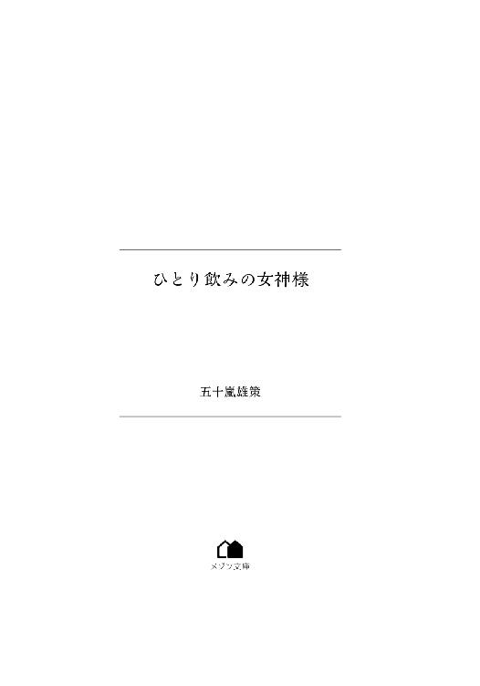

| ひとり飲みの女神様 (メゾン文庫) | |
| 五十嵐 雄策 | |
| 一迅社 (2018) | |

＊
お酒を飲むこと。
それはとても楽しくて、とても幸せな行為だ。
だけど飲みにも、色々な種類があると思う。
会社での飲み、気の合った仲間同士での飲み、親しい人と二人での飲み。
挙げていけばキリがない。
だけどその中でも、特別なものが一つある。
それはひとり飲みだ。
だれかと語り合うでもなく、仕事のためでもなく、ただ目の前にあるお酒とつまみを楽しみ、自分の内面を見つめて、そして省みる。
語り合う相手は――自分自身。
お酒は時に優しく、時に厳しく、様々なことを問いかけてくる。
それはキラキラと光り輝くような時間であり、人生においてかけがえのない大切なものだ。
――と、ここまで難しく書いたけれど。
要は私がお酒が好きだという話だ。
一人で飲む時の、あの独特の空気が、時間が、大好きなのだ。
仲間同士で飲むのもいい、仕事の接待で飲むのもいい。だけどたまにはそれらのしがらみから解放されて、裸の自分自身を見つめ直す時間も必要なんじゃないかという、そんな単純な話だ。
そしてひとり飲みの中でも、女子のひとり飲みはまた格別だと思う。
――女子のひとり飲みには、ひとり飲みの女神様の加護がある。
それが私の持論だったりする。
ひとり飲みの女神様。
ひとり飲みをする女子を見守ってくれているその女神様は、いつだって酒場の片隅にいて、私たちにほんの少しの偶然と、ほんの少しの縁を紡いでくれているのだ、きっと。
これは何でもないお話。
一人の女子が、酒場を訪れて、日々の出来事を振り返ったり、お酒やつまみに対して思っていることを語ったりするだけの、どこにでもあるような話なのだ。
１
――赤提灯が呼んでいる。
日が暮れてネオンの灯り始めた街を、たくさんの人たちが歩いていた。
会社帰りのサラリーマン、大学生と覚しき集まり、女子たちのグループ。
何かを求めるかのように、何かに追い立てられるかのように、皆せわしなく足を動かしている。
豊島区池袋。
超高層ビルで有名なサンシャイン60があり、東口と西口でガラリと雰囲気の異なる街だ。複雑に入り組んだ地下駅は東京駅、新宿駅と並んで都心の三大迷宮として名を馳せており、なぜか東口に西武デパートが、西口に東武デパートがあるという、初心者殺しな構造をしている。ちなみに東口のいけふくろうを代表とした、フクロウのモニュメントがあちこちにあるのも池袋の特徴だ。
そんな池袋の街を、私は軽やかな足取りで歩いていた。
西口の、どちらかと言えば北口寄りの雑踏を、足早に通り過ぎていく。
（ビール、ビール......♪）
まだまだ気温だけでなく湿度も高い九月頭の空気は、ベタベタとしていて肌に張り付くようだった。一歩進むごとに汗が噴き出してくる。本来だったらテンションがガタ落ちしてしまうシチュエーションのはずなのに、私の心は弾んでいた。
だってこの暑さと湿度が、すぐ後に最高のスパイスになることを知っているから。
（黄金色の液体......クリーミーな白い泡......♪）
この先に待っている瞬間を想像して、自然と足が速くなっていく。
今日行くお店はもう決まっている。
少し駅からは離れてはいるけれど、地ビールと地酒の種類が豊富でお料理が美味しい、和食メインの居酒屋だ。
週末の金曜日。
毎週この日は、一人で飲みに行くと決めている。
一週間をがんばった自分への、言ってみればお疲れごほうび晩酌みたいなもの。このひとときを楽しみに、日々の仕事で山ほどあるやるせないことやらストレスやらを何とか乗り切っているのだ。
それに今日は、ちょっとだけいいことがあった。
ささやかだけど、心をほっこりと幸せな気持ちにさせてくれたとある出来事。
だからこの後に待つ晩酌にも、より期待が高まろうというものだ。
駅前を離れると、人の波は少しだけ緩やかになった。
近くに大学があるためか、歩く人たちもサラリーマンよりも学生の姿が多く目立つようになる。
（そういえば私が学生だったのって、もう何年前だっけ......？）
一瞬、余計な計算をしようとしてしまい、慌てて頭をぶんぶんと振ってそれをかき消した。
よくないよくない！ これから楽しい晩酌だっていうのに、そんな気持ちが暗くなるような想像はなしよね。
額から流れる汗をハンカチで拭って、私は歩みを早めた。
歩道の脇にある街路樹では、名残の蝉がどこか切なげな鳴き声を上げていた。
私――川本月子はどこにでもいるような普通のＯＬだ。
今年で二十八歳。十月二十日生まれの天秤座でＯ型、彼氏はなし。都内にある中堅の商社に勤めている。
趣味はウォーキングとウインドウショッピング。あとは休みの日に時々山登りに行ったりもする。
西武線沿線の椎名町に住んでいて、自宅は賃貸の１ＬＤＫ。窓際でサボテンを栽培していて、金魚を一匹飼っている。
ここまでで、特筆するようなところは何もない。
本当に、辺りを見回せば十人は見つかりそうな、凡百な人間だ。
ただ、一つだけ......普通の女子とは少しだけ違っている点があった。
それはお酒が大好きなこと。
ビールから日本酒、焼酎、カクテル、ワイン、ウイスキーまで何でもござれ。
ほとんど呑兵衛と言っても過言ではない。
そして、女子の中では少し珍しいことに。
ひとり飲みが――大好きなのであった。
２
お店の中は、金曜日だけあって混雑していた。
広さにして十五畳ほどのどちらかと言えばこじんまりとした店内は、テーブル席はほぼいっぱいだったけれど、幸いなことにカウンター席は空いていたので、そちらに通される。
「いらっしゃいませ、本日はご来店ありがとうございます」
おしぼりを持った店員さんがにこやかに話しかけてくる。
「ご注文はいかがされますか？」
「生でお願いします！」
即答。
もうこれ以外の選択肢はないというか、むしろこのためだけにここまでの蒸し暑い道のりに耐えてきたと言ってもいいくらいだ。
冷えたおしぼりを首筋に押し当てながら今か今かと待ちわびていると、すぐにそれはやって来た。
「生一つ、おまちどうさまでした」
中ジョッキになみなみと注がれた黄金色の飲み物。
しゅわしゅわと小さな泡沫が底から湧き上がっていて、その魅惑の発泡を真っ白なクリームのような泡がしっかりとフタをしている。
ごくり、と喉が鳴る。
待ちきれずに、重みのあるジョッキを手に取った。
「..................っ......！」
さわやかな刺激が喉を通り過ぎる。
麦とホップが織りなす、苦みのある風味。
キンキンに冷やされた炭酸が、火照った身体に心地いい。
ああ、もう最高。本当にこの瞬間のために日々を生きていると言っても過言ではないかもしれない......
しばし余韻に浸ってから、もう一口。
今度はさっきとはまた違い、落ち着いた麦の香りがゆっくりと喉を潤してくれる。
一杯目は刺激とさわやかさを、二杯目以降は味わいと香りを。
一杯目と二杯目とで飲み口がぜんぜん変わってくるのがビールの憎いところだ。
ジョッキからビールが半分ほどなくなって、ようやく汗が引いてきた。
少し落ち着いたところで、カウンターに置いてあったメニューを手に取る。
「ええと、今日はっと......」
......ふむふむ、今日のお勧めは鰺のたたきか。夏場のこの時期の鰺は臭みもなくとても美味しい。とりあえず刺身の盛り合わせは頼むとして、その中におすすめの鰺のたたきを入れてもらおう。
あとは白海老の唐揚げとマグロの山葵和えと......だし巻き玉子辺りかな。
「すみませーん」
「はーい、お待ちください」
注文を頼んでほっとひと息つくと、辺りを見回す余裕がでてきた。
お店の中はけっこうな賑わいを見せていた。
さすがに金曜日だけあって、十人ほどが座れるＬ字カウンターは、私が来た後にも次々とお客さんがやって来て、すでに八割方が埋まってしまっている。
テーブル席はすでに満員御礼だ。
このお店――『ina』は池袋でも知る人ぞ知る名店で、お店紹介サイト『食いログ』での評価も高い。私がブックマークしているひとり飲みブログでも紹介されていて、そこで見たのをきっかけに一年ほど前に一度訪れて、それ以来たびたび通っている、お気に入りのお店の一つだったりもする。
と、そうこうしている内に、料理がやってきた。
「白海老の唐揚げとマグロの山葵和えです」
わ、来た来た。
目の前のテーブルが美味しそうな料理で埋まっていると幸せな気持ちになってくる。さ、どれからいこうか。うん、決めた。
まずは白海老の唐揚げから。
揚げ立てのまだ湯気の上がる白海老を口に運ぶ。さくり、と軽快な音が口内で響いて、衣の中から旨みが弾け出てくる。白海老は富山の特産品で、五～八センチほどの小さな海老だ。こんなに小さくてもちゃんと海老の味がするのがすごい。
白海老を三つほど食べ終わったところでビールを流し込む。
「......はあ......っ......」
唐揚げで渇いた喉が一瞬で潤い、さらには余計な油も流し去ってくれる。うんうん、一石二鳥とはこのことかしら。
次はマグロの山葵和えだ。
上質な赤身を山葵と醤油とで和えた小鉢は、さっぱりとしていて食べやすい。どうやらマグロは漬けにしてあるらしく、ねっとりとした食感が食欲をさらに増してくれる。うん、美味しい......！
ここでビールがなくなった。
うーん、次は何にしよう。もう一杯ビールでいくのもいいけれど......この後に控えているのはお刺身の盛り合わせだ。だとしたら......
「うん、これはもう日本酒にいくしかないでしょう」
メニューを見る。
今日のラインナップは『飛露喜』、『写楽』、『新政』、『宝剣』『雨後の月』などなど。うんうん、あいかわらずこのお店は日本酒の品揃えがよくて嬉しくなってくる。ここはお気に入りの『飛露喜』にしようかしら。いやでも『写楽』もいいし『宝剣』も捨てがたい......お、ひやおろしが入っている。
（ひやおろしかー......）
そういえば、もうそんな時期だ。
夏が終わりに近づき、秋の匂いが少しずつ辺りに漂い始める季節。
ひやおろしとは、そんな季節に回ってくる日本酒の一つである。
それに、今日の気分には、ひやおろしはぴったりかもしれない。
「すみませーん」
「はーい、何にいたしますか？」
店員さんを呼んで、選んだ日本酒を注文する。
大柄な店員さんは、すぐに持ってきてくれた。
「はい、こちら『雨後の月 八反純米吟醸 ひやおろし』になります」
そんな声とともに、一升瓶から一合グラスに注いでくれる。
私はこの瞬間が好きだったりする。
店員さんが抱えるほどの大きさの瓶から透明な液体がこぼれ落ちて、グラスへと注がれる短い時間。
あ、いい匂い、このお酒はどんな味なんだろう......とか、料理との相性はどうかな......とか、このラベル、何かかわいいな......とか、様々なことが頭を駆け巡る。
僅か三十秒ほどの時間に、たっぷり五つのことは妄想したんじゃないかと思う。
気付けば日本酒は注ぎ終わっていて、受け皿には少し多めにサービス分がこぼされていた。やった、ラッキー。
「続いてこちら、お刺身の盛り合わせになります」
ちょうどいいタイミングで、お刺身の盛り合わせもやってきた。
スズキ、真鯛、カンパチ、マグロ、そして鰺のたたきの五点盛りだ。大きな器に氷を敷いて、見た目も涼やかに盛られている。
まずは白身のスズキから一口。
んー、淡泊でさっぱりしているけれどしっかりと魚の旨みがある、鼻に抜けていくような得も言われぬすっきりとした味だ。
そこに間髪入れずに『雨後の月』を流し込む。磨き込まれて洗練された上品なお米の味が、白身の味をよみがえらせてくれるだけでなく、さらに旨みを膨らませて深みのあるものにしてくれる。ああ、もう、口の中でスズキが泳いでいるみたい......
もう一切れ、今度は真鯛を口に運ぶ。
そうそう、よくお刺身を食べる時には、わさびをお刺身の上に乗っけて、醤油に直接わさびが触れないようにして食べなきゃ絶対にダメだっていう人がいるけど、そこまでうるさく言わなくてもいいと思うよねぇ。もちろんその食べ方もいいと思うけど、普通にわさび醤油にして食べるのもぜんぜん悪くないと思う。うん、美味しい。
「おまちどうさまでした。だし巻き玉子になりまーす」
元気な店員さんの声とともに、さらにカウンターの上が賑やかになる。
まだまだ夜は始まったばかりだ。
３
いいお酒には、様々な素敵なパートナーが付き物だ。
いいお肴、いい器、いいお店、いい空気、いい仲間。
それらは個別に主張をしたり互いに引き立て合ったりして、よりいっそうお酒を美味しいものにしてくれる。
だけどそれよりも何よりも、お酒の味を格別にしてくれるものがある。
心を浮き立たせてくれるものがある。
カウンターの荷物入れに置かれた、小さな紙袋が目に入る。
お洒落な花の装飾のされたかわいらしいそれは、今日の昼休みに会社の後輩である美鈴から渡されたものだ。
「え、プレゼント？ 私に？」
「はい......っ......！」
首を捻りながら訊き返すと、立花美鈴はその小さな顔を大きくうなずかせた。
「先輩が気に入ってくれそうなものを選びました。よかったら、受け取ってください！」
そう言いながら差し出された紙袋。
小洒落た見た目に反して、それは少しだけ重かった。
「でもどうして......？」
今日は誕生日でもないし、何かの記念日でもない。プレゼントをもらうようないわれはないような気がするのだけれど......
すると美鈴は、少しだけ拗ねたような顔で、こう返してきた。
「......先輩、忘れちゃったんですか」
「え？」
「今日で、先輩といっしょに働くようになってから、ちょうど一年じゃないですか」
「あ......」
その言葉にはっとなる。
忘れていた。
確かに一年前の今日、まだ入社して間もない美鈴が、私のチームに部下として配属されてきたのだった。
あの頃の美鈴は入社半年ほどで、まだまだ大学生に毛が生えたくらいの頼りない女の子だった。仕事にも慣れていなかったし、世間知らずなところもたくさんあった。そのせいで色々とぶつかったり、厳しいことを言ってしまったこともあったような気がする。泣かれてしまったこともある。
でも美鈴はへこたれず、一生懸命に付いてきてくれた。
うまくいかないことがたくさんありながらも、直向きに努力をしてくれた。
その甲斐もあって、次第にミスや失敗は減り、いい風向きになってきた。
そして季節が変わる頃には、あんなに自信なさげだった美鈴は、もうすっかり一人前の社会人の顔をしていた。
今では部署は違ってしまっているけれど、休みの日にはいっしょに買い物やランチに行ったりもするような、仲の良い先輩と後輩の間柄だ。
「ひどいですよ、先輩。わたしはちゃんと覚えてたのに」
「ごめんごめん。気にしてなかったわけじゃないんだけど......」
「まあいいですけどー。しかもわたし、今回、やっと一人でプロジェクトを任されることになったんです！ その報告もしたくて」
「え、そうなんだ？」
「はいっ！」
そう元気よく返事をする美鈴の表情は、自信に満ちていた。
何をするにも危なっかしかった一年前とは、大違い。
時間と経験は、こうも人を変えるのかと不思議にさえ思う。
「ずっとやりたかった案件が、やっと実現したんです。それで先輩にはすっごくお世話になったから、絶対に一番に報告しようと思って」
「そっか。ありがとう」
「どういたしましてー。あ、来年もまた『先輩と働くようになって二年目記念日』をお祝いさせてもらいますから、今度は忘れないでくださいね？」
そう言って、美鈴は少しだけいたずらっぽく笑ったのだった。
その時の会話を思い出し、思わず笑みを浮かべながらそっと紙袋を開ける。
中には桐でできた立派な木箱が入っていて、そこには照明の下で蒼く輝く酒器が一つ収まっていた。
『江戸切子』。
江戸末期に江戸で始まった、カットグラス工法のガラス工芸・ガラス細工の一種である。ガラスの表面に様々な模様を施す技術であり、繊細かつとても美しい。常々いいなあとは思っていたが、その魅力に比してお値段もなかなかに張るため、ついつい二の足を踏んでしまっていたりもした。
その江戸切子の、お猪口だ。
矢来文と呼ばれる、矢来と矢が雨のように降ってくる情景に見立てられた、斜め四十五度にいくつも重ねられた線がとても美しい。いつまでも手元に置いて眺めていたくなってしまう。
『先輩はお酒が大好きですからね。これで思う存分、晩酌をしてください。あ、でも飲み過ぎはダメですよ』
小さく笑いながら、美鈴はそう言っていた。
と、そこで一ついいことを思いつき、店員さんに手を上げる。
「すみません」
「はい？」
「あの――」
不躾な頼みなのに、店員さんは快く了承してくれた。
「はい、こちら『雨後の月 八反 純米吟醸 ひやおろし』になります」
かくして蒼く輝く江戸切子に、二杯目のひやおろしが注がれることとなった。
なみなみと注がれたひやおろしを内包して、蒼い輝きに少しだけ透明な色合いが混ざっている。
ひとしきり照明の下でそれを眺めた後に、そっと口へと運ぶ。
「あ......」
確かな日本酒の旨みが、口の中に花開くように広がった。
ひやおろしは......新酒を熟成させたお酒だ。
新酒の瑞々しくてまだあっさりとしているところは残しつつ、それでいて少しずつしっかりと自身の味を出し始めてきている。絞りたての際の粗さが取れ、味わいにまろやかな丸みが出て、味わい深さを楽しめるようになってきている。そしてその旨みは、これから年月をかけてさらに味わい深くなっていく。
まるで人間みたいだ、と思った。
人もお酒も、年月とともに深みを増して成長していく。それは内面のことだったり外面のことだったり、必ずしも良いことばかりではなかったりするのかもしれない。だけど着実に変わっていく。
あの頼りなかった美鈴も、一年で大きく変わった。瑞々しさを残しつつも浮ついた雰囲気が取れ、味わい深いキャラになった。それこそひやおろしのように。
「お待たせいたしました。こちら、カレイの煮付けです」
と、そこで運ばれてきたのはカレイの煮付けだった。
ひやおろしに合うと、店員さんが勧めてくれたものだ。
煮汁がひたひたで、もう見るからに食欲をそそる香りをまとったカレイを一瞥して、口へと運ぶ。
じんわりと口に広がる優しい甘味。そして白身特有の淡泊だけど深い旨みが遅れてやってくる。煮汁が白身の味わいを消さずに、後押ししているのがよく分かる。
そのすぐ後にひやおろしを流し込むと......なるほど、確かにこの上なくベストマッチングで、ただでさえ濃厚だったカレイの旨みが、何倍にも増幅されるのを感じた。
「はぁ、美味しい......」
思わずため息が出てしまうような一皿だ。もうとまらない。
あっという間に煮付けを食べ終わり、その間にひやおろしを三杯おかわりしてしまい、ようやくひと息つく。
「......」
何となく思った。
美鈴がひやおろしなら、私はこのカレイの煮付けになろう。
日々成長し深みを増していく個性を受け止めて、お互いにお互いを引き立てていけるような関係になれたらいいなと思う。
――来年は美鈴といっしょにこのお店に来て、二人でひやおろしを飲もう。
二人で杯を重ねて、カレイの煮付けを食べながらひやおろしを飲んで、いっぱいいっぱい話をしよう。うん、そうしよう。
そう、決めたのだった。
４
「ありがとうございましたー！」
店員さんの元気な声を背中に受けて、お店を出る。
入店してから、たっぷり二時間ほどが経っていた。
さすがにこの時間になると、辺りの空気は涼しかった。
吹きつける風はもうすっかり秋のもので、上着を羽織らないと肌寒いくらいである。夏ももう終わりだなと、少しだけ感傷的な気分になる。
時計を見ると、時間はまだ二十一時を少し回ったところだった。
このまま帰ってもいいけれど、もう一軒くらいハシゴしたい気分でもある。
この辺りには、まだまだいいお店がたくさんある。
古民家風の造りで日本酒がたくさんある『Ｔごとや』もいいし、魚が安くて美味しいと評判の『Ｕ金』もいい。自分の手酌で焼酎を好きなだけ飲める『Ｓざんまい』も捨てがたいし、お気に入りのレンブラントの模写が飾ってあるバー『Ｙ警』でカクテルグラスを傾けるのもいいかもしれない。
「もう一軒......行っちゃおうかな」
明日は土曜日で会社は休みだ。
特に用事も入っていないし、昼過ぎまで寝ていてもだれにも咎められない。......それはそれで、ちょっと悲しくもあるけれど。
......で、でもいいのいいの。一人だって悪いことじゃないわ。自由だし、おかげでこうして大好きなお酒をゆっくり楽しめるんだから！ うん！ 一人万歳！
半ば自分に言い聞かせるように心の中でうなずいて、一歩踏み出す。
「さ、次はどこにしようかな」
そう一人口にして、賑やかな明かりへと向かって歩き出したのだった。
――赤提灯が、私を呼んでいる。
０
初めてのお店に入る時って、どうしてこんなにドキドキするんだろう。
お店の雰囲気はどうだろうか、お酒や料理の品揃えはどうだろうか、マスターは怖くない人だろうか。そんな期待と不安が入り混じって、お腹の奥がすーっと冷えていくような感覚に襲われる。
今日これから私が訪れようとしているのは......新宿にある『Ｇおやじ』というお店だ。
様々な地域の地元でしか手に入らないような稀少な日本酒を多く仕入れているという、いわゆる銘酒居酒屋だった。よく見ているブログ――『ひとり飲みの女神様』で紹介されていて、そこで見つけて以来、ずっと気になっていたのだ。
新宿の南口、どちらかと言えば代々木に近い場所にそのお店はある。
ＪＲの改札を抜けて、駅を出てすぐのところにある大通りの信号を渡る。その先を少し進んだ後に細い道に入ってそのまま真っ直ぐ進むと、そのお店は見えてくる。
「あった」
日本酒の店『Ｇおやじ』と書かれた看板。
どうやら地下にあるお店みたいだ。どんな雰囲気かできれば店内の様子を見てから入りたかったけれど、あいにくそれは難しそうだ。
「――よし」
意を決して、地下へと続く階段に足を踏み入れる。
入り口脇にあったショーケースと、階段の壁にはたくさんの日本酒の空き瓶が並んでいた。まるで訪問者を歓迎してくれるオブジェのようで、もうそれらを見ているだけで気分がグングンと上がってハイテンションになってくる。
勢いのまま扉を開くと、中から店員さんの声がすぐに飛んできた。
「いらっしゃいませ！」
「すみません、予約なしの一人なんですが......」
「お一人様ですね。承知いたしました。カウンターでよろしいですか？」
「はい」
にこやかな声とともに、カウンターの席へと案内される。
さあ、今日もまた私のひとり飲みが始まる――
１
お店の中は、間接照明で少し薄暗い、和風モダンな空間だった。
お客さんはたくさん入っていてほとんど満席だったけれど、あまり騒然とした感じはしない。どちらかと言えば落ち着いた大人の雰囲気だ。銘酒居酒屋だけあって、大きな冷蔵庫の中には数え切れないほどたくさんの日本酒の瓶が並んでいるのが目に入る。わ、すごい、どれから飲もうかしら......
せっかくの品揃えなので、ビールではなく一杯目からお酒にすることにする。少し考えた結果、『鳳凰美田』を頼むことにした。すっきりとしたフルーティーな香りと豊かな吟醸香が全面に押し出された栃木県の日本酒で、最初の一杯にはぴったりの代物だ。
「すみませーん」
「はーい」
店員さんを呼んで注文をして、待つこと三分。
すぐに店員さんが一升瓶を持ってやって来た。
お洒落なグラスになみなみと注がれる透明な液体に幸せな気分を早くも感じつつ、さっそくいただくことにする。
「......ぷはぁっ......」
うん、思った通り食前酒に最適だ。
切れがよく香りの立ったフルーティーな味は、この後にどんな料理と組み合わせてもマッチしそうで、思わずにんまりとしてしまう。
さらに一口味わって落ち着いたところで、料理を注文することにした。
メニューを見ると......ううん、とりあえず刺し盛りは外せないわよね。それに鶏皮ポン酢もいいかも。あとは水茄子くらいかな。
「すみません、注文をお願いします」
「はーい」
それにしても......初めてのお店はやっぱり少しだけ緊張する。
そこまで気にする必要はもしかしたらないのかもしれないけれど、あくまで自分は一見さんなのだから、最低限の空気やルールを壊さないようにと、どうしても気を遣ってしまう。
二度三度通うようになれば、その辺りの機微も少しは分かってくるのだけれど。
（でも......こうやって初めてのお店に入れるようになっただけでも、昔から考えればかなりの進歩よね）
女子にとって一人で飲むのは、初めてのお店に一人で入るのは、なかなかにハードルが高い。
今でこそ私の趣味はひとり飲みで、初めてのお店にもほとんど躊躇なく入れるけれど、昔はそうじゃなかった。初めてのお店に一人で入るのには......それこそ清水の舞台から飛び降りるほどの相当な覚悟が必要だったのだ。
それを乗り越えるためには、いくつかの手順を必要とする。
まずはネットで徹底的に下調べをする。
マスターは怖そうじゃないか、お店の雰囲気は良さそうか、お客さんはどれくらいの世代の人が多いのか、常連ばかりのお店ではないか、女子が一人で行っても浮くような場所じゃないか。
それらの前提条件をクリアして、そこで初めて行ってみようと思える候補の一つに挙げられるのである。
だけどまだまだそれだけじゃない。
いざ実際に現地に訪れてみても、すんなりとお店に入れるわけじゃないのだ。
まずはお店の前を行ったり来たりしつつ、チラチラと店内の様子を覗き見る。ネットの情報と、実際の雰囲気とが食い違っていないかを可能な限り確認する。排他的でなく和やかな空気が流れているように見えたらよし、中でも女子が一人でカウンターに座っていたりすると、これはチャンスかと勢いこんで扉の入り口に手をかけるのだけど......
だけどそこで足が止まることも多々あった。
あと一歩というところで、扉の向こうから聞こえてくる楽しそうな声に圧倒されて、結局諦めて回れ右をすることも少なくなかった。
そんな日は自分のふがいなさに消沈しつつ、コンビニの缶ビールで悔しさをまぎらわせたものだ。
それくらい――女子のひとり飲みの最初の一歩はハードルが高いのだ。
もちろんそんなことをまるで気にしない人もいるだろう。初めてのお店でも、初めてのひとり飲みでも、何のためらいもなく飛びこんでいける女子も少なからずいるのかもしれない。だけどあいにく、私はそっち側の人間じゃなかったのだ。
それでもいつかはひとり飲みをしたいという野望を、私は胸の奥で静かにたぎらせていた。絶対に実行してみせるのだと、密かに息巻いていた。
それが達成されるのは、最初にひとり飲みを決行しようと試みてから実に三ヶ月後のことになるのだけれど――
「お待たせいたしました。こちら刺し盛りになります」
と、そこで頼んだ料理がやって来た。
なので昔の思い出はいったん休憩。
さっそく料理に手を付けることにする。
出してもらった料理はできるだけ早めに頂戴するというのも、ひとり飲みの鉄の掟の一つなのだ。
２
驚くことに、刺し盛りにはウニが箱で付いてきた。
それもスーパーなどでよく売っているような小さな箱ではなく、市場で見るような大きな箱である。そこにぎっしりとソーラーパネルのように詰めこまれた橙色のムラサキウニ。え、これでこの値段って、すごくお得じゃない......？
だってウニ以外にも、普通に鯛、マグロ、タコの三点盛りが付いているのだ。
驚きつつも、そういえば『ひとり飲みの女神様』に山盛りのウニの写真が載っていたのを思い出す。そっか、単品でウニを頼んだのかと思っていたけど、あれは普通に刺し盛りを撮った写真だったんだ......
とはいえこれは嬉しいサプライズだ。
なぜなら、ウニは私の大好物の一つだったりする。
うきうきとしながら、ぷりぷりとした橙色の海の幸を口に運んだ。
「......え？」
思わず声が出た。
え、今、口の中でウニが溶けたよ......？
まるで飲み物みたいだった。ウニは飲み物。あまり鮮度のよくないウニだとここで独特の臭みを感じたり、さらにはミョウバンの味を感じたりするのだけど、このウニにはそれがまったくない。ただただ芳醇な香りが感じられるだけで、海の旨みを凝縮したものをそのまま口にしているようなそんな感覚に包まれる。
「はぁ......」
ため息が出てしまった。
ウニってすごいわよね。見た目はあんな風にトゲのいっぱい生えたいかつい風体なのに、中にはまさに海の宝石としか言えないほどのきれいな橙色の身が詰まっている。
人は見た目によらないということか。人じゃないけれど。
それにしても最初にウニを食べた人はどうしてこれが食べ物だと考えたのだろう。あんなグロテスクと言ってもいい真っ黒な殻の中にこんな柔らかく繊細な甘露が入っているなんて、普通はとても想像できない。
たまたまか、それとも何かきっかけがあったのか。でも何であれありがたく思う。だってその人がいなければ、こうしてウニが今、私の口に入っていることはなかったのだから。
（ありがとうございます......）
先駆者への感謝の念を抱きながら、箸で豪快にウニの塊を取っていく。量が量なので、チビチビ食べていてはもったいない。
そこにさらに、傍らの『鳳凰美田』を合わせる。
日本酒と海鮮系の食べ物の相性はバツグンだ。
口の中がウニ一色で満たされたところを、日本酒で洗うことで、海の滋味が何倍にもなって返ってくる。さながら寄せては返す波みたいに、何度も何度も美味しさの波濤が打ち寄せる。互いの味がまったくケンカをすることがないからすごい。
そんなことを繰り返していると、あっという間に『鳳凰美田』はなくなってしまった。美味しいお酒は減りが早いのが居酒屋の法則でもある。
「えっと、次はどうしようかな」
さっそく次の日本酒を頼むことにする。何がいいかな、『磯自慢』もいいし、『手取川』もいいけど......あ、そうだ。
「すみません、このウニに合う日本酒だと、何がありますか？」
せっかくなので、近くの店員さんを呼び止めてお勧めを訊いてみることにした。
こうして料理とのマリアージュを質問できるのも、銘酒居酒屋のいいところだ。
「そうですね、ウニは甘味が強くクリーミーなので、それを受け止めることができる甘めのお酒でもいいかもしれません。甘口のお酒はお好きですか？」
「あ、はい、大好きです！」
「そうですか、でしたら『醸し人九平次』の『EAU DU DESIR』などが合うと思います」
そう言って、店員さんはお勧めを持ってきてくれた。『醸し人九平次』。愛知県のお酒だ。グレープフルーツのような香りが特徴的なその日本酒は初めて飲むものだったけれど、お勧めしてくれただけあって、もうウニとのシンクロ率は百二十パーセントだった。
ちなみに......今、甘口という言葉が出たけれど、日本酒には大きく分けて甘口と辛口がある。これは日本酒度という指標で表示されることが多く、プラスになるほど辛口でマイナスになるほど甘口というものだ。この『EAU DU DESIR』は非公開であるけれど、たぶんそれなりのマイナスだと思う。最近ではメニューにこの数字が表示されることも多く、日本酒を選ぶ際に私もよく参考にしている。
「はぁ......美味しい」
幸せなひとときを感じつつ、ウニと『EAU DU DESIR』とを交互に口に運ぶ。
それにしても......と思う。
こうやって店員さんと気軽に会話をするなんてことも、昔はとてもじゃないけれど考えられなかった。
初めてひとり飲みをした日なんて、それこそ注文をするのが精一杯だったと思う。
いやいや、それどころか注文すら満足にできていなかった。
その時のことを思い出す。
３
それは、大きめの仕事を抱えていた時期の、帰り道だった。
確か週末の金曜日のことだったと思う。
連日続く会議やら外回りやら残業やらで、私は心身ともに疲れ切っていた。
「お酒飲みたい......」
思わず口を突いて出た言葉がそれだった。身体は疲労で困憊なのだけれど、このまま家に帰る気にはなれなかった。ささくれ立った気分を、一度リセットして切り替えたかったのだ。
その時にたまたま目に入ったのが、当時住んでいたところの近所にある居酒屋だった。のれんがかかっていて、お客さんが十人くらいでいっぱいになる小さなお店だったけれど、何となく惹かれるものがあって、前を通る度に気になっていたのだ。
（ここ、入ってみようかな......）
一瞬そう思うもやっぱりためらう。
そのお店は昔ながらの素朴な雰囲気で、明らかに常連さんたちによって支えられているようなお店だった。そんなところに初見の女子が一人で入っても、きっと馴染めずに浮いてしまうに違いない。
普段だったら、そこで諦めてしまっただろう。
コンビニで缶ビールを買って帰ってしまっただろう。
だけどその時は違った。
たまりにたまった疲れで、思考回路が少しだけ麻痺してしまっていたということもあったのかもしれない。
次の瞬間、衝動がためらいを上回っていた。
「いらっしゃい」
「あ、あの、ええと......」
気が付けば私は扉を開けて、お店の中に足を踏み入れていた。
「一人かい？ じゃあそこのカウンターに座って」
「は、はい」
言われるがままにカウンターの隅に腰を下ろす。
勢いで入ってしまったものの、ほんの数分後にはもう自分の選択を若干後悔していた。
幸いなことにそこは〝当たり〟のお店で、マスターも常連さんたちもみんな優しかったけれど、それでも私は借りてきた猫のように緊張しきりだった。
常連さんたちが気を遣って色々と話しかけてきてくれたのに、ほとんど「は、はい......」くらいしか返せなかったと思う。
正直、何を食べて、何を飲んだのかはほとんど覚えていない。
だけどはっきりと覚えているのは、失敗をしてしまったことだ。
最初のビールの後、私はホッピーを飲んでいた。
ホッピーというのはビール風味のノンアルコール飲料で、『外』と呼ばれるそのノンアルコール飲料を、『中』と呼ばれる甲類焼酎で割って飲むものである。割り方にもよるのだけれど、大抵は『中』が先になくなることが多い。
それは私も例外ではなく、一杯目を飲み終わった後にずいぶんとたくさん『外』が残ってしまっていた。
（どうしよう、おかわりは頼みづらいなぁ......。でもこのまま『外』を残したままにするのはもったいないよね......）
手元の三百六十ミリリットルボトルを見ながら悩む。
......よし。
「す、すみません！」
意を決しておかわりを頼もうとして、マスターに声をかけたまではよかった。
「何だい？」
「あ、あの......」
だけど声を上げた直後に、どちらが『中』でどちらが『外』だったか、頭から飛んでしまったのだ。それはもう見事にすっぽりと。今にして思えば笑い話だけれど、その時は本当にもう世界が終わったかと思ったくらいだ。
口をパクパクとさせたまま固まる私に怪訝な表情になるマスター。
ああもう消えてしまいたい......そう思った、その時のことだった。
「マスター、『中』おかわり」
常連さんの一人が、そう横から声を上げた。
その瞬間、弾かれたように私の中で何かが繋がった。
「わ、私も『中』のおかわりを......！」
慌ててそう続いた。マスターが何かに納得したように「ああ」と笑ってうなずいた。
......あまりにたどたとしい私を見るに見かねて、助けてくれたのだということはすぐに分かった。
それでももう私は死にたい気分だった。
ひとり飲みでやって来たというのに、ホッピーの『中』と『外』が分からなくなるなんてあり得ない。きっとマスターや常連さんたちからも呆れられたことだろう。
このお店にはもう来られない。そんなことを考えながら、無我夢中でホッピーの残りを飲みきって、逃げるようにお会計を済ませてお店を出ようとした時のことだった。
「お姉ちゃん、また来なよ」
背中から、そんなマスターの声が聞こえてきた。
その一言が、救いの声のように響いたのを今でもよく覚えている。
振り返ってみれば、マスターは優しげな笑みを浮かべてこっちを見ていた。
それだけじゃなくて、常連の人たちもみんな、温かな目で手を振ってくれたりしていた。
その時、初めてマスターの顔を見た。
常連さんたちの、顔を見た。
それまで私は、緊張のせいでずっとうつむいていて、だれの顔も見ようとしていなかったのだ。
このことがなければ、気付かないままだったと思う。
最後までお店に馴染めなかったという苦い思いを抱えたまま、もしかしたら二度とひとり飲みをしようとは思わなかったかもしれない。
だけどすんでのところで、それまで見えていなかった大事なものを見ることができた。
私はその声に「は、はいっ......！」と大きくお辞儀をして、そのままお店を出た。
胸の奥ではまだ失敗をした恥ずかしい気持ちは残っている。だけど不思議と、それすらもどこかいい思い出のような、ほんのりと温かな心地だった。
そのお店には、今でも何かあるごとに訪れている。
４
「あの時はひどかったなぁ......」
当時の穴があったら入りたかった記憶を思い出して、ふと苦笑いをしてしまった。
冷静に考えてみればただ注文をど忘れしてしまっただけだし、今思えば本当に笑い話だ。
だけど当時は本当にいっぱいいっぱいで、それだけでその場から疎外されてしまったような心地だった。何だか周り全てから拒絶されてしまったように思えてしまった。そんなことはこれっぽっちもなかったのに。
――要するに、周りがぜんぜん見えていなかったのだ。
ひとり飲みの場は、時として見えていなかったものを見せてくれることがある。
それは普段の生活では気付かない周囲の温かな眼差しなのかもしれないし、日常という殻の奥に隠されていた自分自身の姿なのかもしれない。
だけど見ようとしなければ、それはないのと同じことなのだ。実際に殻を割って中身を見てみなければ、あの真っ黒な殻の中に鮮やかな色味のウニの身が入っていることに決して気付かないように。......って、それは何だかうまいように言い過ぎかもしれないけれど。
何にせよ、それが私の転機となった。
それからは気になるお店があったら積極的に行くようにして、気が付けばひとり飲みが毎週の楽しみとなっていた。
中には水が合わないお店もあったけれど、それよりも新鮮で楽しい思いをすることの方が遙かに多かった。そこではたくさんのお酒やおつまみ、人との出会いや新しい発見があった。
その経験は、大切な宝物として私の一部となっている。
（いいお店との出会いも、美味しいお酒との出会いも、一期一会の縁なのよね）
そう心の中でつぶやいて、グラスに残っていた日本酒を飲み干す。
と、そこでちょうど店員さんが通りかかった。
「次はどうされますか？」
空いている私のグラスを見てそう声をかけてきてくれる。
少し考えて、私はこう答えた。
「すみません、店員さんのお勧めをいただいてもいいですか？」
「お勧めですか、承知いたしました。でしたらこちらはどうでしょうか。『十四代』の本丸で、少し値段はしますが味の方は折り紙付きです。小さいグイ飲みサイズから注文できますので、よかったらどうですか？」
「あ、じゃあそれをお願いします」
「かしこまりました」
これからやって来るお酒も、まだ飲んだことがない銘柄だ。
『十四代』は有名だから名前は知っていたけれど、これまではあいにく飲む機会がなかった。
きっと今日この場でそれを勧められたのも、何かの縁なんだろう。だったらそれを受け入れない手はない。......ちょっとばかり、お高かったけれど。
新しい発見と、心躍る様々な出会い。
今日のこのお店も、そういったものをもたらしてくれる一軒になりそうだ。
０
仕事でイヤなことがあった。
半年に一回あるかないかというレベルの、確実に何日かは引きずるくらいに落ちこむような出来事だ。
歩いていても思わずため息が出る。
空の色もまるで今の私の心を映し取ったかのような薄暗い灰色で、今にも降りだしてきそう。
「はあ......」
本日何度目になろうかというため息とともに、私が降り立ったのは銀座駅だった。
――銀座。
言わずと知れた日本最高の歓楽街の一つであり、だれもが知っているハイブランドをはじめとした様々な高級店がそこかしこに立ち並んでいる。俗に銀座価格なんていう言葉もあるくらいに、どのお店もお高い。そしてそれは飲食店も同じことであり、普段だったらまず飲み歩きなんてしないような街だ。
そう、普段だったら。
だけど今日は事情が違った。
この鉛のように沈んだ気持ちを回復させるためには、普通のお店ではダメだ。
こんな気分の日には、いつもだったら行かないような特別なお店に行かないととてもじゃないけれどやっていられない。
そう考えて、気が付いたら銀座に足が向いていた。
向かっている先は、とあるバー。
「ええと、確かこっちだったかな......」
そのバーには、三年前に一度だけ行ったことがあった。
まだ入社して間もない時のことだ。当時研修中に指導をしてくれた女性の先輩に連れていかれて、カクテルを奢ってもらったのだ。その時もやはり、今と同じように仕事でイヤなことがあって落ちこんでいたのだった。
その時のカクテルの味が、今でも忘れられない。
ちゃんとしたバーに行ったのは、たぶんそれが初めてだったと思う。
まだまだお酒について初心者だった私は、その雰囲気、味、接客、全てに圧倒されてしまった。普段生きているのとはまるで違う世界を覗いた気分だった。
それ以来、そのお店は私にとって特別になった。
「ここを道沿いに進んで......」
記憶と、手元のスマホに表示されている地図を頼りに、夜の銀座の街を歩いていく。
外堀通りに沿って新橋方面へ。
五分ほど歩いた後に銀座西六丁目の信号を右に曲がり、少し進んだビル。
そこにバーがあると知らなければそのまま通り過ぎてしまいそうなたたずまいだ。
「確かここに......あった！」
ビルの入り口付近に目を向けると、小さな看板がそこにあった。
『Bar L』
三年前と同じ、装いだった。
１
「いらっしゃいませ、お一人様ですか？」
エレベーターで地下二階に下りて、重厚な扉を開けると、入り口のところで待機していたバーテンダーさんに声をかけられた。
「あ、はい、一人です」
「どうぞこちらへ」
丁寧な挨拶とともに席へと案内される。
その際に店内を見回す。大きめの会議室ほどの広さの空間に配置された円形のカウンター。その中央にはバックバー――酒棚があり、思わずうなってしまうほどたくさんのお酒の瓶が並んでいる。白を基調とした漆喰の内装はどこか岩肌のようで、まるで洞窟を思わせるような素敵な造りもまるで変わっていない。うん、懐かしいなあ......
お客さんは私の他に五、六人ほど。混雑しすぎもせず、かといって空きすぎてもいない、いい入り具合だ。
案内された席に座ってひと息ついていると、おしぼりとともにまずオニオンスープと野菜スティックが出された。
そうそう、確か三年前もこうだったんだっけ。
お通しでオニオンスープが出てくるお店は初めてだったため驚いたけど、このオニオンスープがまた美味しいのだ。
両手でカップを持って口へと運ぶ。ちょうどいい温かさで、じんわりと身体の奥に染みこんでくるような優しい味。頬が緩むのを感じながらカップを口にしていると、白いジャケットを着たバーテンダーさんがカウンターの向こうに立った。
「おひさしぶりでございます」
「え、私のこと、覚えてくれているんですか......？」
軽い驚きとともに尋ねると、バーテンダーさんは静かにうなずいた。
「はい。確か三年ほど前に、会社の方といっしょに来られていましたよね？ 席も確かすぐそこにお座りになられていて......」
「そ――そうです、そうです！」
思わず少しだけ声が大きくなってしまう。
三年も前のことなのに、まさか覚えてくれているなんて......
少しだけ嬉しくなってしまう。バーテンダーさんは一度お店に来たお客さんのことを絶対に忘れないと話で聞いたことはあったけれど、こうして実際にそれを目の当たりにするともう脱帽するしかなかった。バーを訪れるお客さんが仮に一日三十人として、一体どれだけの人数を記憶しているのか......計算しようとして、途中でやめた。
「何かお作りいたしましょうか？」
「あ、はい。ええと、それじゃあまずは、モスコミュールをお願いします」
「かしこまりました」
そう柔らかく答えて、バーテンダーさんは慣れた手付きでカクテルを作っていく。
カクテルができる工程を見ているのは好きだった。
流れるような動きで、職人技の極致とも言えるその手際の良さに、カウンター越しに思わず見入ってしまう。
「お待たせいたしました。モスコミュールです」
やがて銅製のマグに入れられた琥珀色のカクテルが目の前に置かれる。
モスコミュールは『モスクワのラバ』という意味を持つ、ウオッカベースの比較的スタンダードなカクテルだ。ラバとはロバの一種で、飲むとラバにけとばされたように効いてくるというのが由来になっている。生姜やレモン、ライムなども使われることからさっぱりとした味わいであり、女性にも人気がある......らしい。らしい、というのは、ここに来るまでに電車の中でスマホで調べてきたばかりの知識だからなのだけれど。
いただきます、と口にして、銅製マグを手に取る。
「......はあ......っ......」
瑞々しい生姜やライムの香りとウオッカの風味とが一つになって、口の中をさわやかに通り抜けていく。飲み口の良さからあまりアルコールを感じないけれど、これでも度数は十三パーセントはあるらしい。
おつまみにはひとまずお通しで出された野菜スティックを一口かじる。マヨネーズをつけて食べるニンジンやキュウリは口内の味を変えてくれて、一本食べ終わるとまたモスコミュールが飲みたくなってくる。
これ、とまらないやつかも......
あ、喉を通っていく、炭酸の刺激が心地いい。
生姜の鮮やかな香りが鼻を抜けていく度に、アルコールが回って、世界が少しだけぼんやりとその境界を曖昧にしていく。
こうしていると......何だか今日あったイヤなことも少しだけ頭の中から消えていくような気がする。
ふう、と息を吐いて、私はモスコミュールをもう一度喉に流し込んだ。
２
そもそもは、先輩のミスが発端だった。
取引先への報告をし忘れるという単純な失敗。
それ自体は早い段階で自分の非を認めて謝ってしまえば、それで済んだだろう話だ。
ただ先輩――森田先輩というのだけれど――は、それを誤魔化そうとした。誤魔化して先延ばしにしようとした。さらにそれが発覚すると、自分は素知らぬ顔をして私に責任をなすりつけようとしたのだ。
そのせいで、話がややこしくなった。
私としてはヘタに反論をしてひどい目に遭うのがイヤだったため、その場では何も言わずに我慢をしてやりすごそうとした。もともといいかげんなことで有名だった先輩だ。追及したところでのらりくらりとかわされた挙げ句、結局自分のミスを認めてくれることはないだろうと踏んだのだ。それなら余計な口論などしないで早く終わらせた方がよっぽど建設的だ。
だけどそこで、そうは考えなかった者がいた。
同僚で同期の――北山という男だ。
「今回の一件はどう考えても森田さんのミスです。川本には非はありません」
きっぱりとした口調で北山はそう言い放った。
「森田さんはそれを誤魔化して川本に押し付けようとしています。それはあってはならない。たとえ先輩後輩の関係であっても、そこは徹底するべきです」
当然のごとく先輩は反論をしたけれど、上司は分かってくれたようだった。
おかげでミスの責任を取ることはなくなった。先輩には舌打ちをされたものの、上司や同僚も同情してくれた。
そこまではよかったのだ。
だけどことが終わった後に北山のところにお礼の挨拶をしに行ったところ、彼は大きなため息をつきながら私を見下ろした。
「お前さあ、あれはないだろう」
いきなりそんな言葉を浴びせられた。
「いくら先輩だろうが、ハッキリと言うところは言わなくてどうする。あいつの怠慢を認めるだけでなく、これから先も同じようなことが起きた時に、だれも文句が言えなくなってしまう。違うか？」
「それは......」
その通り......だ。
「お前がだれかと揉めたくないのは勝手だが、責任の所在を曖昧にされるのは、俺たちにとっても迷惑だ」
ぐうの音も出なかった。
私は先輩との個人的なゴタゴタを面倒に思って全てをなあなあで済ませようとしたのに、北山はそのことが今後の部内に与える影響まで考えていたのだ。
北山の言葉は正論だった。
どこまでも、正論だった。
だからこそ、悔しかったのだ。
もちろん、私のことをかばってくれたということも分かっている。
だけどどこかもやもやとした気持ちだけは、胸の中から消えてくれなかった。
３
次に頼んだのは、ジャックローズというカクテルだった。
二杯目にマッチしたカクテルをとリクエストをしたところ、これが出されてきたのだ。
「わあ、きれい......」
鮮やかな赤色をしたショートカクテル。
バーテンダーさんに聞いてみると、これはカルヴァドスというリンゴのブランデーをベースにしたものであり、カルヴァドスはアメリカで別名アップル・ジャックと呼ばれているらしい。そのアップル・ジャックで作ったバラのような色合いのカクテルであることから、ジャックローズと名付けられたとか。
「美味しい......！」
飲んでみるとリンゴの甘くてさわやかな味わいが口の中に広がった。僅かに感じられるライムの酸味も全体に色を添えている。色合いといい味といい、ばっちり私の好みだった。
甘やかな果実の余韻を楽しみながら、ジャックローズのショートグラスを傾ける。
淡い間接照明の下でたゆたう深紅のカクテルを見ていると、少しだけ気分が上向いたような気になってくる。
「......」
だけどそれも束の間、ジャックローズを飲みきってしまい我に返ると、ふと昼間の北山の言葉が頭に浮かんできてしまう。
「それは、北山の言っていることは正論だけど......」
だけど、正論であることと、それを素直に受け入れられることとは、別問題なのだ。
むしろ正論だからこそ、受け入れ難いことというのも確かに存在する。
「でもやっぱり、私が悪いのかな......」
空になったグラスに視線をやりながらそうひとりごちる。
すると、ふとカウンターの向こうにいたバーテンダーさんと目が合った。バーテンダーさんは私を見ると、にこりと笑い返してきてくれる。
「あ、ええと......」
「どうかされましたか？」
「え、いえ、その......」
酔いも手伝ってか、私はいつの間にかバーテンダーさんに話しかけていた。
「実は......今日、会社でちょっとイヤなことがあったんです」
先輩とのいざこざと、北山とのやり取りを説明する。
「言うべき時には言いにくいことでもちゃんと主張しておかないと、それが許されるような風潮ができてしまう。他の同僚や、部下のためにも、きちんと示しをつけておかなければいけない......」
「......」
「それは分かる、すごく分かるんです。でも、頭では分かっていても、何だかもやもやして、気持ちがついていかなくて......」
「......」
バーテンダーさんは肯定するでも否定するでもなく、ただ静かに私の話を聞いてくれた。時折相づちを入れつつ、カウンターの向こうで穏やかに微笑んでいる。その距離感が心地好かった。
「バーテンダーさんはどう思います？ やっぱり悪いのは私なんですよね......？」
「そうですね......事情はそこまで分からないのですが、どちらがいいとか悪いとか、そういう問題ではないように思えます」
「どちらがいいか悪いかではない......」
「はい。私の考えを少しだけ言わせていただければ、その同僚の方は確かに歯に衣着せぬ物言いだったかもしれません。ですがそれは、お客様のことを思って言ってくださったことなのだと思います」
「それは......」
その通りだった。
いや、そのことは十分に分かっているのだ。
だからこそ面倒事を余計な波風を立てずに済ませようとしてしまったことと、そのことを指摘されつつも飲みこむことができなかった自分を、こんなに引きずってしまっているのだろう。
「はあ、まだまだぜんぜんダメだなあ......」
今の会社に入って社会人になってから早三年以上。少しは成長したかと思っていたけれど、そうではないということを今日は思い知らされてしまった。
こんな日は、もう切り替えないとダメだ。
美味しいカクテルを飲んで、バーテンダーさんに少しだけ甘えさせてもらって、贅沢な時間を過ごそう。
そのために銀座まで来たのだから。
「すみません、次をお願いします」
三杯目は、完全にお任せで注文をした。
するとバーテンダーさんはラムは大丈夫ですか？ と尋ねてきた。大丈夫だと私が答えると、出てきたのは大きな丸い氷とともにロック・グラスに入れられたキレイな琥珀色のカクテルだった。
「これは......」
「ジャンヌ・ダルクです」
バーテンダーさんは言った。
「ラムベースのカクテルで、レシピは秘密です。オリジナルカクテルなので」
「オリジナル......」
「はい」
バーでは、定番のカクテル以外にもこうしてオリジナルの一杯が出ることがある。
カクテルブックには載っていない、世界でそのお店だけの、バーテンダーさんのこだわりや理念が詰まった珠玉の一杯だ。
ジャンヌ・ダルクは少しだけアルコールは強めだったけれど、ラムの甘みが活かされていて、とても美味しかった。
飲んでいる間は、何だか自分が救国の英雄になれたような、そんな心地に浸ることができていた。
４
「そろそろ行こうかな......」
ジャンヌ・ダルクを飲みきったところで時計を見ると、すでに入店してから二時間近くが経っていた。
こういったちゃんとしたバーには、あまり長居をするものではない。
多くても五杯以内二時間以内で席を立つのがマナーなのだと、何かの本で読んだ。
なのでお会計を頼もうとしたところ、バーテンダーさんがこう言ってきた。
「よろしければ最後に一杯、こちらをどうですか？」
「？」
「私からのサービスでございます」
そう言って目の前に出されたのは......モスコミュールだった。
「先ほどのものより、少しウオッカを少なめにして、生姜やライムなどを増やしております。締めの一杯にはちょうどいいかと」
銅製マグからはさっきよりも強い柑橘の香りが漂ってきている。
確かに、酔いを醒まして意識をすっきりさせるのにはいいかもしれない。
だけど、そこで疑問が生まれた。
「でも、どうしてモスコミュールを？」
モスコミュールは最初にも飲んでいる。最後の締めに相応しいというだけなら、ジントニックとかジンフィズとかでもよかったはずなのに。
と、そこで、どこかで聞いた言葉を思い出す。
――バーでの一杯には、必ずメッセージがある。
バーテンダーさんから勧められたり、他のお客さんから奢られたりする一杯には、何かしらの意図があるという言葉だ。
だとしたらこのモスコミュールにも、何か込められた意味があるんだろうか。
するとバーテンダーさんは小さく微笑んでこう言った。
「そこまで大げさなものではありません。ただ、モスコミュールにはとあるカクテル言葉があります」
「カクテル言葉？」
「はい。カクテルにおける、花言葉のようなものでしょうか。ちなみに『ケンカをしたら、その日のうちに仲直りをする』というものが、モスコミュールのカクテル言葉です」
「......！」
その言葉に思わず声を失ってしまう。
だってそれは、今の私に必要なことを的確に表していたから。
私の胸の中にあるもやもや。
何だかいまいちすっきりとしない思い。
ケンカをしたわけではない。
だけど、私の心に......どこか北山に対するわだかまりが残っているのは事実だった。
「差し出がましいことかもしれませんが、もしも少しでも引っかかりを覚えていらっしゃるのなら、お話をされるのがいいと思います」
「......」
「心のしこりというものは、日を置けばおくほど解決しにくくなるものですから。余計なお節介だったら、申し訳ございません」
「いえ。そうですよね......」
これでは先輩の押し付けを曖昧にした時と同じだ。
物事の本質を見ようとしないで、楽な方へと流される。
後でどうにかすればいいと、その場はお茶を濁す。
それじゃあ、ダメなのだ。
話さなければ、向き合わなければ、何も前に進みはしない。
北山の言葉に引っかかる部分があったのなら、溜め込まずに、その場で言えばよかったのだ。
「ありがとうございます。何だか憑き物が落ちたような気がします」
「そうですか。それならよかったです」
「はい！」
そううなずき返して、いただいたモスコミュールを喉に流し込む。生姜とライムのさわやかな香りが、心の中の澱を洗い流してくれるかのようだった。
「ごちそうさまでした！」
「ありがとうございました。またのお越しをお待ちしております」
エレベーターの前まで送ってくれたバーテンダーさんに挨拶をして、ビルを出る。
手にはスマホを握りしめたまま。
もちろん、北山に電話をかけるために。
５
バーというのは、不思議な空間だと思う。
日常の延長でありながらどこか非日常を内包していて、優しく、そして温かい。その中では人は少しだけ普段よりも素直になれるのかもしれない。
今日ここに来なければ、とても北山と話そうなんて思わなかっただろう。
家に帰って、缶ビールを飲みながらテレビでも見て、そのまま毛布を頭からかぶって寝ることで全部忘れようとするだけだったはずだ。
だけど今は違う。
駅へと向かって歩きながら、私はスマホのグループラインから北山の名前を探して、そっと通話ボタンをタップする。
数回のコールの後に、北山は出た。
「あ、もしもし、あのさ、今日のことなんだけど――」
もしかしたらまた馬鹿だと言われてしまうかもしれない。
そのことにカチンときて、言い返したりもしてしまうかもしれない。
だけどやり場のないもやもやを抱えているよりは、お互いの気持ちをちゃんとぶつけ合った方が、ずっと先々のためになるはずだ。
最後のモスコミュールの鮮烈な味がよみがえる。
外堀通りの灯りが、来た時よりも少しだけ明るく輝いているように見えた。
０
それは十一月になって、だんだんとコートとマフラーがないと通勤が厳しいような肌寒い毎日が続くようになってきたある土曜日。
我が家では、一年に一度の大事な儀式が執り行われようとしていた。
「テーブルをどけて、スペースを確保してっと......」
それまで置いてあった折り畳みテーブルを片付けて、部屋の中央に半径一メートルほどの空間を作り上げる。
部屋の奥の収納から座椅子を出して、周りにある小物の位置を調整する。
全ては一つの目的のために。
「コタツコタツ......♪」
そう、日本の冬の代名詞......コタツをお迎えするためだ。
この日のために部屋の掃除もして、かわいい上掛けを買って、布団もちゃんと干しておいた。
エアコンもいいけれど、やっぱり日本の暖房器具と言えばコタツだ。冷え性なので足先を温めてくれるのもありがたいし、何よりこの風情というかあるとそれだけで落ち着くたたずまいはエアコンでは味わえないものがある。
「よし、できた！」
コタツ本体に布団と上掛けをかけて、最後に上板を乗っけて完成だ。
さっそくスイッチをオンにして足を入れる。
「ふう、あったかい......」
少しすると、足先から熱がじんわりと全身に伝わってきてぽかぽかとしてきた。足下は温かいけど顔はひんやりとしたままなので、変に火照ったりしなくて心地いい。
そのままごろりと横になって、スマホを手に取る。
「お、『ひとり飲みの女神様』、今日も更新されてる」
紹介されているのは赤羽にある『ＭＭ家』だ。
赤羽では有名なお店で、昼飲みが楽しめるらしい。昼飲み......寡聞にしてまだやったことはない。ここは今度、休みの日にでも行ってみたいなあ。
「お、こっちの肉バルも、このお寿司屋さんも美味しそう......」
そんなことをしながらごろごろしていると、あっという間に時間が過ぎてしまっていた。
気が付けば、窓から見える太陽はすっかり西に傾いていた。
「うわ、もうこんな時間か」
時計を見るともう十八時。
コタツは快適だけど、この時間泥棒なところが玉に瑕だったりする。
「お腹空いたなあ......」
お昼過ぎから何も食べないで作業をしていて、そのままコタツでのゴロ寝に突入してしまったため、お腹からは頼りない音が聞こえてくる。
だけど今日はもう外には出たくない。
せっかくの土曜日なのだからどこかで飲みたい気持ちはあるものの、着替えて最低限のメイクはしないといけないと思うと、その決意も途端に消沈してしまう。
給料日前で懐も寂しいし......そうだ、こういう時は、あれだ、あれでいこう。
私は起き上がると、ぐっと手を握りながらこう口にした。
「――家飲みをしよう！」
１
家飲みとは、その言葉通り、家でお酒を飲むことである。
時間や周りの目を気にしなくていいし、おつまみなどは自分で作ることができるため外で飲むよりもリーズナブルに済むことが多く、それゆえお金がない時にはありがたい。なので私は、月に何度かはこうした家飲みをしていた。
（ラッキーなことに今日は家飲みに最高のシチュエーションが揃ってるし......）
それが何であるかは後々明かしていくとして。
ただ家飲みをするにあたって、いくつかの私なりのこだわりがある。
こだわりというか、楽しくするためのちょっとした方法かな？
何といっても大事なのは雰囲気作りだ。どうせ家で飲むのだからといって、適当にだらだらと飲むのはできればしたくない。やっぱりこれから飲むんだぞ、という高揚感が欲しいところである。
そのために工夫していることがある。
まずは音楽。
ポータブルオーディオをセットして、よく居酒屋などでかかっているジャズ調のちょっと気分の上がるバックミュージックを流す。
続いて照明だ。こんな時のために買った、お洒落な間接照明のライトをコタツの隣に置き、他の電気を消す。オレンジ色の淡い光がうっすらと部屋全体を照らして......うんうん、かなりいい感じだと思う。
これだけでだいぶ雰囲気が出てきた。
いつもの見慣れた部屋が装いを変えて、ちょっとだけお店の中にいるかのような見た目になる。
とはいえ私の格好は部屋着にすっぴんだった。そこはやっぱり家で飲む以上リラックスしたいから譲れない。外飲みと家でのくつろぎのいいとこ取りをできるのが、家飲みの嬉しいところだと思う。
「よし、部屋の準備はこれでよしっと」
様変わりした部屋を見て満足する。
となると次は......おつまみよね。
鼻歌を歌いながら、台所へと向かう。
冷蔵庫の中身を確認すると......うん、これなら問題なくいくつかおつまみが作れそうだ。
頭の中でメニューを思い浮かべながら、卵を三個ほど取り出す。
一品目はだし巻き玉子だ。
最近はだし巻き玉子を家で作るのにも凝っている。もちろんお店ほど上手に作れるわけじゃないけれど、自由に作れるのが嬉しい。具にする候補として紫蘇と、明太子と、納豆がある。どれを入れようかとしばし迷い......結果全部入れることにした。ふふ、これができるのが家飲みの醍醐味よね。
ボウルに卵とダシと醤油、砂糖、水を加えてかき混ぜる。それを玉子焼き用のフライパンを使って丁寧に巻きながら焼き上げていく。破れないようにコテを使ってうまく巻いて......と、よし、できた！
だし巻き玉子ができあがり、今度は冷凍庫に入っていた子持ちシシャモを手に取った。これをコンロに載せた網焼きプレートの上でじっくり焼いていく。正確には本物のシシャモではなくカペリンと言われる代用魚なのだけれど、これで十分美味しいのだから問題ない。
「うーん、もう一品くらい欲しいかな......」
冷蔵庫の中を見渡す。
するとイカの塩辛とポテサラがあった。
「よし、きみに決めた！」
これでひとまずのラインナップは揃った。
できたてでまだ湯気の上がるだし巻き玉子と、同じく香ばしい匂いを部屋中に漂わせるシシャモ、ポテサラをそれぞれお皿に盛り付ける。
ここでこれらのお皿をお盆に載せるのがポイントだ。お盆に料理をまとめると、何だかぐっと特別感が出てくる。これもまた、家飲みで雰囲気を出すための重要なファクターなのだ。
「うん、完成」
大きくうなずいて、私はコタツへと戻ることにした。
２
カーテンの隙間から見える窓の外はすっかり暗くなっていて、飲み始めるのには絶好の時間帯となっていた。
おつまみを載せたお盆をコタツの中央に配置して、さらに冷蔵庫で冷やしておいた缶ビールを横に並べる。よし、準備は万端だ。
「いただきまーす」
食前の挨拶とともに、まずは缶ビールを開ける。プシュっという心躍る音が部屋の中に響き渡る。もう待ちきれない。そのまま喉に流し込む。
「はぁ、この一杯がたまらない......！」
缶から直接飲むビールは、居酒屋でジョッキで飲むのとはまた違った美味しさがあるように思えるのは私だけかな？
さてさて、ひとまず缶ビールで乾杯をしたところで、おつまみを食べることにする。
どれから手を付けようか迷って、だし巻き玉子を一番に選んだ。やっぱり熱々のうちに味わった方がいいものね。
「どれどれ、出来は......」
ふわふわの黄色い宝物を口に入れると、まずだし汁がじゅわっと溢れ出してくる。同時に具材の紫蘇と明太子、納豆が、それぞれ個性を主張しつつも調和して、一つの味になっている。たまらずに缶ビールを流し込んだ。
「......ん～、我ながら美味しい......」
二、三個だし巻きを摘んだところで、シシャモに手を伸ばす。
香ばしくパリパリな身にサクリと歯を通すと、次の瞬間にぷりぷりとした卵が飛び出してきた。わ、まるで機関銃みたい！ どうして魚卵ってこう美味しいんだろう。イクラしかり明太子しかりこのシシャモしかり。ワタの部分のほろ苦さもまたたまらない。あ、ダメだ、これはもう日本酒にしないと......
缶ビールを一気に飲み干すと、その後ろに控えていた日本酒の四合瓶を開栓する。この前、近所の酒屋さんで見つけて思わず買ってしまった『新政』のラピスラズリラベルだ。それを美鈴にもらった江戸切子のぐい飲みになみなみと注ぐ。
そしてシシャモをもう一尾口にすると、後に続くようにぐい飲みを傾けた。
「......はあ......」
もうため息しか出てこない。
この日本酒は、以前にお店で飲んで以来、すっかり気に入ってしまった銘柄だ。卸される先が限定されているらしく、なかなか普通の酒屋では売っていないため、ずっと探していたのだった。
すっきりとした甘味と酸味が特徴的で、それこそ名前の通りキラキラと光るラピスのような味わいがシシャモにぴったりと合う。輝くラピスの海の中でシシャモが元気に飛び跳ねながら泳いでいるみたい......
少し落ち着いたところで、三品目だ。
コンビニで買ったポテサラに、イカの塩辛を混ぜる。たったそれだけだ。この組み合わせは前に居酒屋で見たことがあり、絶対家でもやってみようと心に決めていたのだ。
「さ、どうかな......ん、お店の味だ！」
口に入れたポテトサラダは、お店で食べた時のものとほとんど同じだった。
イカの塩辛の少しクセのある風味が、どっしりとしたポテトによくマッチしている。キュウリのサクサク感もいい感じ。そこに『新政』を流し込めば......うわぁ、口の中でイカとジャガイモとキュウリがダンスをしているみたい。これだけで四合瓶全部いけちゃいそう......
しばらくの間、特製ポテサラと『新政』の応酬が続く。
と、そこで我に返った。
「と、いけないいけない、これはとっておきのお酒だから......」
『新政』はここぞという時に飲む秘蔵の逸品であるため、半分ほど飲んだところで他の日本酒にチェンジすることにした。
こちらは純米系のいかにも日本酒という味わいのものであり、これはこれでポテサラによく合う。ちなみに以前にうちで家飲みをした時に友だちが置いていった代物だ。これの他にやっぱり残していったおつまみもいくつかある。家飲みに最高のシチュエーションが揃っていると言ったのはそれゆえだったりもする。
と、そこであることを思い付いてしまった。
この日本酒と、チェイサー兼割り物として買っていた炭酸水を混ぜたら、スパークリング日本酒みたいになるんじゃないかな......？
「......」
邪道も邪道、お店で飲んでいる時には、口が裂けても言えないことだ。
だけどここはお店じゃない。
他にはだれもいない、私だけの楽園だ。
「......ちょ、ちょっとだけ......」
だれに対するともしれない言い訳をつぶやきながら、日本酒の入ったコップに炭酸水を注ぐ。
シュワシュワと発泡する日本酒を見ていると......何だろう、何だかすごくいけないことをしているような気分になってくる。
思い切って飲んでみる。
炭酸がプラスされたお手製スパークリング日本酒は、さわやかではあったものの......少しばかり、味が薄かった。
「うーん、こんなものかぁ......」
思ったような味にはならなかったけれど、それでも何だか楽しい。
これも家飲みの魔力だろうか。
３
家飲みを開始してから、二時間ほどが経った。
ほどよくお酒も回って、だいぶいい気分になってきた。
だけどおつまみがもうほとんどない。
シシャモとポテサラは完食で、だし巻き玉子がかろうじて一切れ残っているだけだ。
「うーん、まだまだ飲み足りないなあ......あ、そうだ」
ここは......とうとうあれの出番かもしれない。
台所へ向かい、冷蔵庫で解凍していたとあるものを取り出す。
「ふっふっふ、私にはまだこれがあるのよ」
――馬肉のセット。
こういう時のために通販で買っていたものだ。
ほどよい具合に解凍されたそれを、お皿に取り分けていく。
赤身、霜降り、馬ヒレ、たてがみからなる馬刺し。桜ユッケ。そして赤身を少し使って作った馬肉のガーリック焼きだ。
「おつまみが馬肉だったら......やっぱり飲み物はこれよね」
それまで飲んでいた日本酒からチェンジ。戸棚に入れておいた芋焼酎を取り出す。
飲み方はどうしようか。普段はロックか水割りで飲むことが多いけど、今の時期ならお湯割りもいいかも。
そうと決まればさっそくお湯を沸かす。三分ほど待って......よし、沸いた。
酒器もチェンジしてお湯割り用の陶器製グラスを用意する。お湯を先に入れてその後に焼酎を注ぐと味がまろやかになるのだとか。とはいってもついつい焼酎を先に入れてしまう。ま、いいか。
「よし、できた」
お盆の上には馬肉の盛り合わせと、熱々のお湯割り。
第二陣とともにコタツへと戻ることにした。
「いただきまーす」
コタツの所定の位置に戻り、まずは焼酎のお湯割りを一口。
乙類焼酎の味わい深い風味とともに、温めることで立った芋の香りが鼻に抜けていく。かといって芋臭いわけじゃない。身体の芯から温まってくるかのようだ。
「ふう......」
温かい飲み物って、どうして人の心を落ち着かせてくれるんだろう。
ほっこりとしたところで、いよいよ本命の馬刺しに手を伸ばす。
まずは赤身から。薬味にネギと、そして生姜かニンニクのどちらを選ぶかで一瞬迷う。生姜はさわやかで無難だけど少しばかりパンチに欠ける。ニンニクは味わい的には満点だけど、翌日の匂いの残りが気にかかる。
「......ニンニクかな」
どうせ明日は休みだし、だれかと会う用事もない。
せっかくの美味しそうな馬刺しを前にして、こんな風に躊躇するのは失礼というものだ。
散らしたネギの上におろしニンニクをこれでもかというほどたっぷり載せて......いただきます。
「うんうん、お肉を食べてる感じがする！」
豚肉や牛肉よりも少しだけ野性を感じられる味。うん、やっぱり付け合わせは生姜よりもニンニクの方が好きかも。
そこに間髪入れずにお湯割りを流し込む。
芋焼酎のしっかりとした風味が馬肉の動物性の味を受け止めてくれて、さらには脂分もきれいに流し去ってくれる。おかげですぐに次――今度は霜降りにしよう――を食べたくなってしまうから困る。そして馬刺しを口にすると、少しクセのある芋焼酎がまた恋しくなる。どっちも九州の特産品だけあって相性はこの上なくばっちりだ。
とはいえ馬刺しばかりも食べていられない。
箸休めに卵の黄身を混ぜたユッケを口に運ぶ。
うん、こっちも......絶品！ 赤身のさっぱりとした味と、ゴマとタレの風味、さらに黄身の濃厚な味わいが三重奏を奏でているかのようだ。
そしてガーリック焼き。
馬肉とニンニクの相性は先ほど立証された通りだ。
さらに味の強いもの同士、芋焼酎との組み合わせも何一つ問題ない。
頭の中に、芋焼酎の流れる馬場を何頭もの馬たちが元気よく走り去っていくイメージが流れていった。
「幸せ......」
あっという間に、馬刺しも焼酎もほとんどなくなってしまった。
「......」
残り少なくなった馬刺しを見ながら、ふと思う。
もしかしたら......この残った馬刺しでお茶漬けを作ったら、とんでもないおつまみができるんじゃなかろうか。
主にカロリー的な意味で、私の中の天使が「ギルティ」と言っている。でも私の中の悪魔は、「やるしかないでしょう」と甘い声で囁いている。
数分考慮した結果、悪魔が勝った。
馬刺しのお皿を片手に台所へと戻る。
ええと、確かネギもあったはず......あった！ これを刻んで、そしておろしニンニクを載せて、その上からざっとダシ醤油を回しがけする。あとは熱いお湯をかければ......完成だ。
「......」
ゴクリ......
見ているだけで喉が鳴ってしまった。
立ちのぼる湯気、様々な旨みが入り混じった香り、ほどよく色付いた馬刺し。
これがもう美味しくないはずがない。
こうなったら、料理に合わせて焼酎もグレードアップだ。
棚の一番奥に眠らせておいた、秘蔵の『百年の孤独』。
宮崎県の有名な焼酎で、蒸留後にそのまま出荷される一般的な焼酎とは異なり、ウイスキーと同様に蒸留した焼酎をホワイトオークの樽で熟成させ、三年もの、四年もの、五年ものをブレンドした代物なのだという。
お酒の飲めない上司からもらった貴重な逸品だ。
ここは熱いお茶漬けと対比させるために、ロックで飲むことにしよう。
冷凍庫から氷を出してきてグラスに入れる。何だかもうコタツまで戻るのが面倒になってきたので、台所でそのまま一口。
「うわ、何これ美味しい......」
焼酎でありながら、ウイスキーのような風味もする。そういえば洗練された日本酒の大吟醸は白ワインのような味もするし、お酒というものは極めれば極めるほど、その境界線が曖昧になっていくものなのかもしれない。
研ぎ澄まされた麦の余韻に浸りながら、今度は熱々のお茶漬けをかきこむ。
焼酎ロックで冷えていた舌に、温かなお米がさらさらと染みこんでくる。お湯をかけることで半生になった馬刺しがまた何とも言えないいい味を出している。
そして口内の状態が一新されると、次はまた冷たい焼酎のロックを舌が求めてくるのだ。
「あ、これ無限にいけちゃうやつだ......」
冷、温、冷、温のエンドレスでとまらない。永久機関ってやつよね......
あっという間に、お茶漬けを食べきってしまった。
「ごちそうさまでした」
空になった器の前でそう手を合わせて時計を見ると、気付けば時刻は午後十時を回っていた。
どうしてか、飲んでいる時は中盤から後半にかけての時間の流れが速い。もうとんでもなく速い。体感ではまだ八時過ぎくらいの感じなのに......
「でもまあ、せっかくの土曜日だもんね」
どうせ明日は休みだし、だれかと会う用事もない。
ゆえに今日が終わるくらいの時間まで飲んでいても、何一つ問題はない。......って、これ、さっきも言ったっけ？ まあいいや。
「さ、次はチーズをおつまみにして、ワインでも開けちゃおうかな......」
少し前にスーパーのセールで買ったチリ産赤ワインの存在を思い出す。
千円ほどのさほど高くないワインだけど、味は一人で晩酌をするのには十分すぎるほどのものなのだ。
「そうと決まれば......あ、トマトもある。よしよし、カプレーゼが作れる！」
食器棚からワイングラスを出して、ワイン飲みに移行する準備をする。
買っていたハーブチキンもあるし、どうせならサラダ的なものも作っちゃおうかしら？ 少しは健康にも気を遣った方がいいものね。
そう考えながら、うきうきとコタツへと戻るのだった。
まだまだ、夜は長い――
４
「う、ううん......」
窓の外から聞こえてくる雑踏の音と、カーテンの隙間から差し込む日の光で目を覚ます。
どうやら昨日は、いい気分で飲んだまま寝てしまったみたいだ。
幸いなことにベッドまではかろうじて移動していたみたいで、そのままコタツで寝てしまい風邪を引いてしまうようなことはなかった。
ベッドの上で身体を起こす。途端に頭がガンガンと痛むのを感じた。気持ちも悪い。う......やっぱり少し飲み過ぎたかもしれない。調子に乗ってついつい飲み過ぎてしまうのは家飲みあるあるだ。焼酎を飲んでいい気分になったところでやめておけばよかったのに、そうしなかったのは大いに反省すべき点だ。
「......朝ご飯、食べよ」
そうつぶやいて、痛む頭を抱えながらベッドから出る。
とはいえ昨晩は食べ過ぎた感があるのも否めない点ではあるため、シリアルくらいにしておこうとは思う。そこまで食欲もないし。
そんなことを考えながらコタツのある部屋に入ったところで、動きが止まった。
「......」
視界に入ってきたのは......あちこちに散乱した空き瓶、片付け忘れた食器、少しだけ残ったおつまみ。
コタツテーブルの上は、見るも無惨な腐海と化していた。
......ああ、そうだ、これがあったんだ......
頭痛がさらに増したような気がした。
楽しいことばかりの家飲みの、唯一と言っていい欠点。
全てを自宅でやる以上、当然のことながら片付けも全部自分でしなければならない。そして当日の内にそれをやるのを忘れると、翌日に全て持ち越すことになるのである。
前の夜に好き勝手にやった代償といえばその通りだけど、二日酔いの痛む頭でこの惨状を見ると、少しばかり気が重くなってくるのもまた事実であり......
「片付けよ......」
台所から取ってきたゴミ袋を手にのそのそと片付けを始める。
兵どもが夢の跡。
そんな言葉がふと頭に浮かぶ。これ何だっけ、芭蕉の俳句だっけ......？
まだ少しだけボーっとする頭でそんなことを考えながら、空き瓶を台所へと運んだのだった。
＊
テーブルの上には、大きめの箱が置かれていた。
『手作りビールキット』と書かれた箱。
家飲みの片付けがあらかた終わった後に、ついでだからと部屋の掃除をしていたら、キッチンの戸棚の奥から出てきたものだ。
「ああ、そういえば買ったな、これ......」
箱を眺めながらぼんやりと思い出す。
もちろん動機は、自分の手で自分だけのビールが作れたら楽しいだろうなという飲み女子の発想である。
『手作りビールキット』とは、その名の通り自分の家でビールを作ることができるキットだ。
ビールが自宅で、それも自分だけの一本を作れるときたら、飲み女子にとってはまさに垂涎の一品だ。ただしアルコール度数が普通のビールよりもかなり低く抑えられてしまうのが玉に瑕だったりする。そうしないと酒税法とかその辺りに引っかかってしまうらしい。詳しくは知らないけれど。
作り方はステップがあって、まずは使用する器具、鍋やタンクなどを全て消毒する。大きな鍋でお湯を沸騰させたら、半液体状の『ビールの素』を加えてよく溶かす。溶かしたものをタンクに注いだら、水を加えてある程度まで冷ます。そこにイーストを振りかけて、そのまま温度と湿度に気を付けて二週間ほど発酵させる。二週間経ったらそれを保存瓶に入れてさらに二週間ほど待てばできあがりだ。
そう――意外と手間がかかるのだ。
特に発酵中の温度管理がくせもので、気を付けないと酸っぱいビールができてしまうこともあるのだという。
さらに最初に仕込んでから完成まで一ヶ月かかるというのも大きい。
なのでどちらかと言えば面倒くさがりな私は、買ったはいいもののすっかり忘れて放置してしまっていた。
「だいたい、何でこれを買おうと思ったんだっけ......？」
いくらビールが好きとはいえ、どこかできっかけがなければ自分で作ろうという発想自体が出てこないはずだ。
「......あ」
と、そこで思い出した。
そうだ、あれだ、ビアガーデンだ。
夏に、後輩の美鈴といっしょに行った池袋のビアガーデン。
その時に、このビールキットの話が出たのだ。
あれは確か今から三ヶ月ほど前のことで――
＊
七月。
夜になってもまだ熱気が抜けきらない真夏日に、私と美鈴は池袋の百貨店の屋上にいた。
この日はたまたま二人で飲みに行く約束をしていて、それならばこの時期はビアガーデン一択しかなかろうということでここになったのだ。
終業の五時間前から楽しみで楽しみで、もう十七時が近づく頃には五分に一回は頭にビールの画像が浮かんでいた。
そんな念願のビアガーデン。
「せんぱーい、これ泡ばっかりになっちゃうんですけどー！」
セルフのビアサーバーの前で美鈴が情けない声を上げていた。
「え？ ああ、そこのレバーは前に倒すと泡しか出てこないから、ちゃんと後ろにも倒さないと泡ばっかりになっちゃうよ」
「そういうことは早く言ってくださいよー」
「ごめんごめん、知ってるかなって」
「あたしビアガーデン初心者なんですからー」
意外なことに、美鈴はビアガーデンが初めてだった。
ビアホールやビアバーは経験済みだけれど、こういったいわゆるセルフ式のビアガーデンは今まで行ったことがなかったのだという。好きそうなのに。
「ううう、泡ばっかり......」
泡が体積の七割を占めたジョッキを持って美鈴が泣きそうな顔で戻って来た。
そんな美鈴をなぐさめつつ、ジョッキを掲げる。
「それじゃあ乾杯！」
「かんぱーい！」
定番の文句とともに、ジョッキを打ち鳴らす。
炭酸のさわやかな刺激とホップのほどよい苦みが、乾ききった喉にはオアシスのようだった。はあ、もうたまらない......！ 流した汗の分だけするするとビールが喉を通っていく。いつもなら中ジョッキを飲み干すのに三十分くらいかかるのに、今日はもう最初の一口だけで半分以上がなくなってしまった。
「はぁ......もうここでなら、いくらでもビールが飲める気がする」
屋上は風通しがいいことから夏といえども快適で、ビールを飲むのにはもってこいの環境だった。
天井のない開けた広い空間、ふんだんに揃えられたおつまみ、自分のペースで飲めるセルフのサーバー。
さすがはビールの庭――ビアガーデンの名を冠しているだけはある。
美鈴も楽しそうにうなずいた。
「ですねー。やっぱり夏のこの時期は特別ですよ。普段はあたし、あんまりビールは飲まないんですけど、今だけはぐいぐいいけちゃう」
「あれ、そうなんだっけ？」
「はい。サワーとか梅酒とかの方が好きですかねー。あとはワインとか」
そっか、確かに美鈴はどちらかと言えば甘いお酒の方が好きだった。それからするとビールは少しばかりハードルが高いのかもしれない。
「うーん、こんなに美味しいのにな」
私にとってはビールのないひとり飲みなんて考えられない。
すると美鈴はこう言った。
「えー、先輩、そんなにビールが好きなら家で作ったらどうですかー？」
「作るって、そんな簡単にビールができたら苦労しないわよ」
「え、できるって話ですよ？ この前、友だちが自慢してましたもん」
「そ、それって密造とかじゃなくて......？」
「違いますよー。何か家で簡単に作れるキットが買えるって言ってましたよ。通販とかでもあるって」
「へえ......」
そんなのがあるんだ。
気になってスマホで調べてみると、次々と出てきた。
いわゆる普通のビールだけでなく、英国ビール、ベルギービール、スコットランドビール......へぇ、黒ビールまで手作りできるんだ。
「どれか買ってみたらどうですか？ 先輩は凝り性だから、絶対こういうの好きですって」
「うーん、そうね」
悪くないかもしれない。
世界で一つの自分だけのビールという響きに、飲み女子としてはやはり憧れてしまう。
「分かった、この普通のやつを一つ買ってみる」
少し考えた末に、そうすることにした。
ビールには色々と種類があって、それこそ本場のドイツビールやベルギービールと、普通に居酒屋などで出てくるビールとではぜんぜん味が違うのだけど、私はやっぱりオーソドックスな普通のビールが一番好きだった。
「さすが先輩！ できたら飲ませてくださいねー」
「うん、楽しみにしててね」
そう言って、スマホを操作して購入手続きをする。欲しいものがあったらその場でスマホからすぐに買うことができるなんて、便利な時代になったものだ。......って、この台詞、何だか年寄りくさいわよね......
よし......これでオッケーっと。
手続きが完了するのを確認して、満足した気分で手元の中ジョッキを口に運んだのだった。
そして数日後。すっかり頼んだことも忘れていた大きな荷物が通販会社から届くのである。
＊
――と、これがこの『手作りビールキット』（税込み一万千百五十八円）がうちにやって来るまでのいきさつである。
届いた時は興奮した。
子どもの頃にサンタさんにお願いをしたクリスマスプレゼントが届いたような高揚した気分だった。
とはいえこういうちょっと珍しいものは注文する時と届いたその瞬間が気持ちのマックスで、そこからはだんだんと冷めていき、しまいにはこうやって忘れ去られて戸棚の肥やしになるのがほとんどである。
この『手作りビールキット』も類に漏れずに翌日以降記憶の片隅に追いやられていき、ついでにキッチンの片隅に追いやられていき、ついには箱から出されることもないまま今日まで眠ることになったのだった。
「せっかくだし、作ってみようかな......」
開けてもいないのにこのまま放置してしまうのももったいない。
気がかりだった温度と湿度管理も、秋から冬にかけてのこの時期が一番やりやすくはあるとか。
「よし......やってみよう」
そうと決まればすぐに行動だ。
使用する器具は基本的には全てキット内に入っている。自分で用意しなくてはいけないのは鍋くらいだ。
戸棚から引っ張り出してきた鍋とタンクを消毒して、お湯を沸かし始める。
やってみると、手順が多い割には意外と簡単だった。
『ビールの素』を溶かして、イーストを振りかけてタンクに移すところまでは一時間ほどで終えることができた。
あとは発酵するのを待って、二週間後にこれを保存用のボトルに入れ替えてしまえばひとまずは終了だ。
と、ここで面白い情報をネットで発見してしまった。
保存用のボトルに、これまた自分オリジナルのラベルを作ると楽しいとのことだ。
どうやらパソコンとプリンターがあれば意外と簡単にできるらしい。
さっそくやってみる。
ううん、そうね、どうせならちょっと凝った感じの、市販のビールっぽいデザインにして......
色々と考えること一時間。
ようやくオリジナルのラベルが完成した。
「よし、できた......！」
名付けて『Mondlicht』。
〝月子〟にちなんだ、ドイツ語で〝月明かり〟という意味だ。
これをボトルに貼って......っと。
うん、見た目はもう完全にビールの小瓶だ。
あとは一次発酵するのを待って、これに移し替えるだけ。
ふふ、できあがりが楽しみ楽しみ。
＊
そして一ヶ月後。
いよいよ自家製ビールの解禁日となった。
どうせならということで美鈴を家に呼び、自家製ビール会を開くことにした。
「わー、ここが先輩の部屋なんですね！」
「ま、あんまり片付いてないんだけどね。あがってあがって」
「はーい」
なぜかはしゃいだ声を上げて美鈴が靴を脱ぐ。
自家製ビールは、リビングのテーブルの上に並べて用意してあった。
「お、これが先輩オリジナルのビールなんですね。ええと、む、むーんど......？」
「あ、ラベルも自分で作ったんだ。『Mondlicht』。ドイツ語で月明かりって意味だよ」
「さすが先輩、なんか月の写真までラベルにプリントされてるし、やっぱり凝り性だ......」
美鈴が買ってきてくれたソーセージや唐揚げなどのおつまみを前に、満を持して自家製ビールの栓を抜く。
グラスに注がれた『Mondlicht』はそれこそ月のようなきれいな琥珀色をしていて、市販のものよりも少しだけ色が濃いように見えた。
「それじゃあ改めまして......」
「先輩の、むーんど何とかに......かんぱーい！」
お決まりの乾杯をしてさっそくグラスを口に運ぶ。
さてさて、自家製ビールのお味は......
「わ、何これ美味しい！」
美鈴が声を上げた。
「今まで飲んでたビールとぜんぜん違う！ これならいくらでも飲めちゃうかも......」
「ほんと、自分で言うのも何だけど、美味しい！」
喉を通過していくと同時に麦のふくよかな味わいと鮮やかな香りが飛びこんでくるのに、それでいて後味はすっきりと軽い感じで、ものすごくバランスがよかった。
自家製ということで贔屓目はあるのかもしれないけれど、それでもこれはかなりいい出来なんじゃないかと思う。
そして味もそうなのだけれど、特筆すべきは......
「それにこれ......泡がすごく美味しいですー！」
美鈴が驚いたように声を上げる。
そうなのだ。
泡が美味しい。何というかクリーミーでまろやかで、まるで生クリームを食べているかのようなのだ。
調べてみたところによると、通常市販されているほとんどのビールの泡は人工の炭酸ガスを後から入れたものであるとのことだ。それに比べて自家製ビールの泡は酵母から出る天然の生きた泡であるから、美味しさもぜんぜん違うのだとか。
「はあ、ずっと飲んでいたい......」
「ほんと、先輩オリジナルは最高ですー......」
二人揃ってそんな声を漏らす。
「このビールキット、誕生日プレゼントとかにも最適だって書いてあったけど、そうかもしれないですねー」
ああ、それはそうかも。確かにこういった普段は自分からは買わない物をプレゼントでもらえると、嬉しいかもしれない。
と、そこで美鈴がこっちを見た。
「誕生日と言えば......そういえば先輩は今年の誕生日はどうするつもりなんですか？」
「私？ そうね......今年は土曜日だから特に予定はない感じかな」
「え、そんなさみしい......」
「いいのよ。この歳になるとそこまで誕生日に思い入れとかなくなるし。きっと当日も覚えてないと思うわ」
女子にとって二十五を過ぎた辺りから、だんだん誕生日なんてものはどうでもよくなるのだ。
特に三十の目が見えてきた最近は、それが顕著だ。
美鈴は「えー、でもー......」と言っていたけれど、せっかくの楽しい女子飲みの時間なんだから、もうこの話はおしまいおしまい。
「ほらほら、そんなことより、せっかくなんだからもっと飲んでいってよ。たくさんあるんだから」
「あ、はーい、じゃあいただきまーす！」
再び乾杯をして。
結局その日は、日付が変わる寸前まで宴は続けられたのだった。
０
最近、飲み女子たちの間で熱い場所がある。
北区赤羽。
朝から飲める居酒屋が多く存在しており、かつ千円あればベロベロに酔えるという通称〝センベロ〟のお店がそこかしこにあることで知られている街だ。
大衆居酒屋の聖地などとも呼ばれている。
もちろん熱いとされている理由はそれだけじゃない。
チェーン店をはじめとして、昔ながらの雰囲気のある居酒屋、渋い立ち飲み屋、ちょっとお洒落な感じのバーと、とにかくお店のラインナップが豊富なのだ。
今回のひとり飲みの行き先は、その赤羽だった。
新宿から埼京線に乗っておよそ十五分。池袋からだと十分弱。快速も停車することから、アクセスしやすい立地にある。終業後に会社から向かっても、十八時には余裕で到着できる計算である。
そして今回、せっかく赤羽に行くのだからやってみたいことがあった。
それは――
「ハシゴ酒、よね」
ハシゴ酒。
一軒のお店で腰を据えて飲むのではなく、次々とお店を変えてお酒を飲むことである。本来はハシゴを一段ずつ登るように馴染みのお店を一軒ずつ巡り訪ねていくという意味であったとか。
実は赤羽は、そのお店のバリエーションの多さから、ハシゴ酒のメッカとしても有名なのだ。
（結果的にハシゴ酒になっちゃうことはあるけど、最初からハシゴ目的で行くことはなかなかないのよね）
なので今回は流れでそうするのではなくて、始めからハシゴ酒目的でのひとり飲みをやってみようということになったのだ。
ちなみにあらかじめ行く先の候補は目星を付けてある。情報源はというと......『ひとり飲みの女神様』だった。つい先日ブログが更新されていて、そこに赤羽でのハシゴ酒について触れられていたのだ。
今回は、おおむねそのモデルコースに従ってハシゴをする予定だった。
「ふふ、楽しみ。どんなお店とお酒とおつまみが待ってるんだろう」
期待に胸を膨らませながら赤羽駅から第一歩を踏み出す。
――さ、赤羽ハシゴ酒、行ってみよう！
１
赤羽駅前は、思っていたよりもずっと活気に溢れていた。
駅前のロータリーは行き交う大勢の人で賑わっているし、さらに辺りを見回せばたくさんの飲み屋がこれでもかというくらいに並んでいるのが見て取れる。うう、これは予想よりもすごいかも......
若干気圧されつつ赤羽駅を東口に出て、向かったのは道路を一つ渡った先にある一番街だった。
一軒目に訪れようとしているのは、この一番街を入ってすぐのところにある『ＭＭ家』というお店である。
鯉とうなぎが描かれた大きな看板と店頭に並んだたくさんの赤提灯が目印で、遠目からでもすぐにそれだと分かるくらいに迫力がある。
「さ、赤羽デビューだ......！」
少しだけ緊張しながら店内へと足を踏み入れる。
まだ早い時間にもかかわらず、店内はほとんど満席状態だった。
もうすでにいい調子の大勢のサラリーマンらしきスーツ姿の人たちを中心に、ひしめくように大いに賑わっている。調べたところによるとここのお店は朝の九時から営業しているらしい。なるほどなるほど、それならこの時間でこの雰囲気なのも納得だ。
席はほとんど埋まっていたけれど、お一人様であることが幸いして、一階のコの字カウンターの一角に入ることができた。
「すみません、生をお願いします」
何を置いてもまずはこの一杯だ。
真冬でもない限り、これがないと始まらない。ほとんどルーティーンみたいなものかもしれない。
運ばれてきた中ジョッキを三分の一ほど一気に飲み干して、ここに来るまでに渇いた喉を湿らせる。
「はぁ......美味しい......」
さ、落ち着いたところで注文注文。
ここのお店は赤羽屈指の老舗居酒屋として有名だけれど、実はうなぎや川魚が看板商品であるらしい。『ひとり飲みの女神様』で下調べしたところによると、それらのどれかは絶対に食べておくべきだとか。
ということで、うなぎの肝焼きと鯉の洗いを注文した。
料理はすぐに出てきた。
「ありがとうございます」
カウンターの向こうからお皿を受け取る。
さてさて、評判のうなぎと川魚の味はどうだろう。
まずは鯉の洗いに手を付ける。
実は鯉を食べるのはこれが初めてなのだけれど......果たしてどんな味なのだろうか。
不安半分期待半分の心地を抱きながら口に運ぶ。
「あ......っ......」
口に入れた途端、新鮮な証拠でもあるコリコリとした感触がいっぱいに広がった。川魚というと臭みが気になることが多いけれど、これはまったくクセがない。酢味噌でなくて醤油で食べたいくらいだ。鯉ってこんなに美味しいものだったんだ......！
普段は食べ慣れない魚ということで少しだけ抵抗感はあったのだけれど、食べた後にはそんなものはどこかに吹き飛んでいた。しかもこれでお値段は四百円ときている。さすがセンベロ。お財布にも優しい。
さあ、次はうなぎの肝焼きだ。
いい塩梅に焦げ目のついた肝が串に刺されていて、それだけで食欲をそそる。見た目は焼き鳥みたいだけれど......
「いただきます......っ!?」
うわ、美味しい。
香ばしいタレと山椒の辛味がうなぎのしっかりとした味によく合っている。肝独特のほろ苦い風味もたまらない。あ、これはビールがとまらなくなるやつだ......
その予想通り、うなぎの肝と中ジョッキを何往復かしていたら、ここで早くもビールがなくなってしまった。
「次はどうしようかな......」
少し考えて、次はこのお店の名物だというジャン酎モヒートを注文する。
これはモヒートというカクテルを居酒屋風にアレンジしたもので、モヒートセットと呼ばれるライムとミントの小皿を、ジャン酎と呼ばれるジャンボ焼酎に自分の手で入れて完成させるものである。
「あ、これ、好きかも......」
ミントとライムが効いたさわやかでドライな飲み口が特徴的で、いくらでも飲めてしまいそうな気がする。女子の好きな味だ。焼酎の味が強いので、鯉とうなぎどちらにもよく合うところもポイントが高い。
「ふう......っ」
あっという間に二杯目も飲み干して、同時に料理も食べ終わってしまった。
もう少し腰を据えて飲みたいところだったけれど、ハシゴ酒の基本は一軒であまり長っ尻にならないことだ。
あまり長居しすぎるとお腹もいっぱいになってしまうし、酔いが回るとだんだん動くのが面倒になってきてしまう。だいたいの目安としてはお酒を一杯か二杯におつまみを二、三品。それで次のお店に移動するのがきれいなハシゴ飲みの形である......のだと、『ひとり飲みの女神様』に書いてあった。メニューにあったすっぽん鍋が気になるところだったけれど、これは今度また来た時のお楽しみにしよう。
（これもハシゴ飲みのため......ハシゴ飲みのため......）
そう心の中で何度も言い聞かせて、後ろ髪を引かれるような思いで、私は『ＭＭ家』を後にした。
２
二軒目に向かったのは、『ＭＭ家』から歩いてすぐのシルクロードと呼ばれるアーケードにある『Ｍ水産』だった。
もともとはおでん種の小売店なのだけれど、おでんをつまみながら立ち飲みができるカウンターとテーブルが用意されている。そういったお店の成り立ちもあって、飲み物は缶ビールに缶チューハイ、ワンカップがメインとなっていた。
ここも『ＭＭ家』と同じように朝の十時から開店しているということで、店内はすでに人でいっぱいだったけれど、やっぱり一人ということで何とか入店することができた。お一人様万歳！
テーブルの一角にスペースを確保して、二軒目の一杯目――累計三杯目には缶チューハイと、おでんをいくつか注文する。
混雑しているため、さすがにすぐには出てこない。
待っている間に、周りを見ながら何となく考える。
居酒屋に来ると、いつも不思議に思うことがある。
それは普段の生活ではなかなか味わうことのできない、呑兵衛にとっての〝あるある〟であり七不思議のようなものだ。
たとえばお通しのキャベツがものすごく美味しい。たぶん普通のキャベツを千切りにして出しただけなのに、いっしょに出てくるソースにつけて食べるのが妙に美味しいのだ。こればかりは家で再現しようとしてみてもどうしてもうまくいかない。場の雰囲気や、その時の心境というものがすごく影響しているんだと思う。
また翌日スマホを見ると、いつ撮ったのか分からないお酒やおつまみの写真が山ほど写っていたりしている。普通だったら頼まないような変わった珍味や面白いお酒が写っていたり。後で見直すのは楽しいのだけれど、同時にちょっと怖くもある。
そして何よりも不思議なこと。それは、隣り合った人となぜだか普段の三割増しで仲良くなってしまうことだ。気が付いたら旧知の仲のようにお喋りをしているということもよくある。もちろん、同じお酒好きという共通項が距離をぐっと縮めるのだろう。好きなお酒やおつまみ、美味しいお店の話で花が咲くことは珍しいことではない。
そして今日も、それは例外ではなかった。
「あれ、お姉さん、一人ですか？」
ふとそんな声を受けて横を見る。
そこにいたのは、片手にワンカップを持って人懐こい笑みを浮かべる、私と同じか少し歳下くらいの女子だった。
「あ、はい、そうです。ひとり飲みに来ていて......」
そう答えると、女子は嬉しそうに笑った。
「そうなんですね。あたしもなんです。よかったらかんぱいしませんか？」
と、そこでいいタイミングで缶チューハイとおでんがやって来た。
女子が持っていたワンカップをこっちに向けてくる。断る理由なんて、もちろんなかった。
「「かんぱーい！」」
喧噪の中で、缶チューハイとワンカップが高らかに打ち鳴らされた。
隣の女子は、星菜と名乗った。
都内の会社に勤めるＯＬで、歳は私の二つ下らしい。
「えっと、星菜さんは赤羽にはよく来るんですか？」
「あ、敬語とかやめてくださいよ。お姉さんの方が歳上なんだから」
「え、そ、そう？ じゃあ、星菜ちゃん」
「はい」
「星菜ちゃんは赤羽にはよく来るの？」
「ええと、そうですね、けっこう来ます。これで五回目くらいかも......」
「え、ほんと？ すごいすごい。私、今日が初赤羽なの」
「わ、そうなんですか？ それでここに来るなんて、いいお店選びをしてますね！」
「うん、ちょっとネットで調べてね」
訊いてみると、星菜ちゃんもけっこうな呑兵衛のようだった。
私と同じようにひとり飲みが大好きで、週末になると各地の有名なお店に行ってはひとり飲みを楽しんでいるのだという。
「やっぱりひとり飲みって楽しいですよね。もちろんだれかと飲むのも嫌いじゃないですけど、でもひとり飲みにはひとり飲みの、何ていうかお酒と自分に真っ直ぐに向き合えるところに魅力があるっていうか......」
「私と同じだ。わ、何か嬉しいな。同士に会えたみたい！」
「こちらこそです。今日はとことん飲みましょう。かんぱーい！」
「かんぱい！」
本日二回目の乾杯を交わす。
初対面で、会ってから三十分しか経っていないのにここまで気安く話すことができるのは、やっぱりこういった居酒屋ならではのものだろう。ちなみにこの時点で缶チューハイはとっくに飲み終わっていて、すでにワンカップに移行していた。
おでんを食べながらワンカップを手にお喋りを続けていく。わ、この大根、ダシがしみしみで美味しい......
「あ、そういえば、あれはもう飲みました？ ここの名物の......」
と、星菜ちゃんが訊いてきた。
「実はまだなんだ。でも、これを飲み終わったらと思って」
彼女が言っているのは、このお店の名物の一つだった。
途中まで飲んだワンカップをおでんのカウンターに持っていくとダシを注いでくれるので、それで割って飲むのだという。今日ここのお店に来た目的の一つだった。
「すみません、お願いします」
三分の一にまで減ったワンカップを手に持って熱々のダシを注いでもらう。さらにおまけということで、七味も少し加えてもらった。おお、何だか日本酒というよりもまんまおでんのダシ汁みたいな不思議な飲み物に......
さっそく飲んでみる。
「......」
「どうですか？」
星菜ちゃんが楽しそうな笑みを浮かべながら訊いてくる。
「うーん......何というか......」
「何というか？」
感想に困る味だ。
お酒なのかダシなのか、いまいち判然としない。
決してまずいわけではない。でも別にあえてこうして飲む必要はないというか、物珍しさが先に来るというか......
「ふふ、面白い味ですよね。こういうのもありなのかって感じで。でも絶対に一度は飲んでみるべき味だと思います」
どうやら星菜ちゃんも同じような微妙な感想だったらしい。
だけどそんなやり取りもまた、楽しかった。
３
せっかくなので、次のお店には星菜ちゃんといっしょに行こうという話になった。
「『Ｚや』ですよね？ ちょうどあたしも行こうと思ってたんです。よかったらごいっしょしましょう」
そう言われては一も二もなくうなずき返すしかない。
お会計をして、星菜ちゃんといっしょに『Ｍ水産』を出る。
ちなみにかかったお金は一人二千円弱だ。文字通りのセンベロとはいかなかったけれど、それでも相当に安いことには変わりはない。
「ここの前の『ＭＭ家』も千円ちょっとだったし、給料日前には助かるわぁ......」
「ですよねー！ あたしもお金ない時はすぐ赤羽なんですよ。あとはセルフの日本酒飲み放題のお店とか......」
「へぇ、そうなんだね」
「はい。あ、そうだ、あたし、ＳＮＳをやってるんですけど、今日のことブログに書いてもいいですか？」
「え、そうなんだ？ なになに、何ていうブログなの、検索する！」
そう言ってバッグからスマホを出そうとして、そのスマホがどこにもないことに気付いた。
「......あ、ごめん、私、忘れ物してきちゃったみたい」
「え？」
そういえばさっきのお店でテーブルの上に出したりしていたから、きっとそのまま置いてきてしまったのだろう。飲んでいるとよくあるのだ。
「ごめんね、ちょっと取りに行ってくるから、先に行っててくれるかな？」
「あ、いっしょに戻りましょうか？」
「大丈夫。すぐ合流するから先に行ってて」
「分かりました。それじゃあ席を取っておきますね」
そう言って歩きだした星菜ちゃんと別れて、急いでお店へと戻る。
『Ｍ水産』は相変わらず混み合っていた。
というかそろそろいい時間になり始めているということもあって、むしろさっきまでよりも混雑度は高かった。
「え、えっと、この辺りだったと思うんだけど......」
少し前まで飲んでいたテーブルの辺りを、入れ替わりに入っている新しいお客さんに謝りながら探していく。
だけどスマホは見当たらない。
「ちょっと、ねえちゃん、邪魔だよ」
「す、すみません......」
怒られてしまった。
確かに混雑している店内でまごまごと探し物をしている私は、傍から見てもかなりの邪魔者だ。
さっさと見付けて撤収しよう。そう思いさらに真剣に探す。だけど気が急くほど焦ってしまい、探し物は見付からない。
「お、おかしいなあ......確かにこの辺りに置いたはずなのに......」
地面に落ちてしまったのかと、しゃがみこんでテーブルの下を覗きこんでみる。
ドンッ......！
「あ、悪いな」
体勢を低くしていたため見えていなかったのか、お客さんの一人にぶつかられてしまった。その弾みでバランスを崩して、地面に尻もちをついてしまう。スカートでなくてよかった。それだけは救いだったけれども、今のは少しばかりしんどかった。急にこの場にいることに居心地の悪さを感じてしまった。ぶつかってきた人に悪気はないのは分かっているけれど、さすがに心が折れてしまいそうになる。
「......」
その時だった。
「あー、やっぱり。まだ探してたんですね」
「星菜ちゃん......」
見上げるとそこには、心配そうにこっちを見る星菜ちゃんの姿があった。
「遅いから心配して来たんですよ。言ってくださいよー。スマホだったら、あたしが鳴らせば一発じゃないですか」
「それはそうなんだけど......」
まさかここまで見付からないとは思わなかったし......
とはいえこの場においての星菜ちゃんの出現は、私にとってまさに救いの女神様に他ならなかった。
電話番号を伝えて、着信音を鳴らしてもらうことにする。
「それじゃあ、かけてみますね」
そう言って星菜ちゃんがスマホで番号をフリックする。
～～～♪
直後に、テーブルの下から重低音の着信メロディーが響き渡った。
何ともこの場に似つかわしくないそれは......ダースベイダーのテーマ。
あ、し、しまった......仕事用のスマホじゃなかったから、着信メロディーは自分の好みのこっちのやつだったんだ......！
店内のお客さんの視線が一斉に音のした先に集まる。
「......プッ、何でダースベイダーだよ」
と、だれかがぼそりと言った。
「ほんとだよ、もうちょっと何かあるだろ」
「え、それっておねえちゃんのスマホなの？ 渋いとこついてくるねぇ」
「面白いねえちゃんだな、ハハハ！」
途端に大爆笑に包まれる店内。
う、は、恥ずかしい......
そんな顔から火が出そうなほど恥ずかしい思いをしつつも、同時に私はどこかほっとしていた。さっきまで感じてかけていた胸が締めつけられるような疎外感は、気が付いたらどこかに吹っ飛んでいた。
「あはは、月子さん面白い！」
声を上げて笑っている星菜ちゃん。
その明るさと屈託のない性格とに、心から感謝した。
４
無事に何とかスマホを回収した私たちは、『Ｚや』で乾杯をしていた。
「さっきは本当にありがとう！ おかげで本当に助かっちゃった......！」
「いいんですよ。あたしは別に何にもしてないですから」
あっけらかんと星菜ちゃんが言う。
その顔は本当に何とも思っていないみたいだった。いい子なんだな......
「あ、それより、よかったら連絡先を交換してくださいよ。月子さんみたいに飲める女子ってなかなかいないから、ずっと飲み友だちが欲しかったんです。またいっしょに飲みましょうよ！」
「あ、そうね。こちらこそぜひ」
うなずき返して、電話番号の他に、ＳＮＳやメッセージアプリなどのＩＤも交換する。
『北山星菜』
受け取ったばかりの彼女のプロフィールには、そう表示されていた。
「へへー、これで飲み友だちですね。じゃんじゃん誘っちゃいますからね」
「うん、望むところよ」
「よかった！ がっつり系の飲み女子の友だちって少ないから。あんまり男子からの誘いばっかりくると、兄貴がうるさいんですよ。そんなの全部断れって」
「へぇ......」
ちょっとシスコン気味のお兄さんなのかな。
とはいえその気持ちも少しだけ分かる。星菜ちゃんみたいにかわいくて飲める女子は人気があるだろうから、身内としては気が気でないに違いない。
「......って、そんなこと言ってたら兄貴から電話だ。すみません、すぐに戻ってきますから」
そう言って、星菜ちゃんはぱたぱたとお店の外へ出ていった。
口では何だかんだ言いつつもお兄さんの電話には出るその態度を微笑ましく思いながら、テーブルにあるグレープフルーツサワーへと手を伸ばす。
本日のハシゴ酒の最後のお店『Ｚや』。
ここは牡蠣を安く美味しく食べられるお店とのことで、赤羽界隈では有名なのだという。
グレープフルーツサワーをちびちびとやっていると、注文した生牡蠣と焼き牡蠣がやってきた。
テーブルの上にずらりと並んだ牡蠣・牡蠣・牡蠣。
あまりに美味しそうで、ごくりと喉が鳴る。
星菜ちゃんはまだ戻ってくる気配がない。
「......」
ちょ、ちょっとだけ先に味見してても、いいよね......？
ほら、出された料理に手を付けないで待っているのもあれだし......
心の中でそんな言い訳をしつつも、まずは生牡蠣を口に運ぶ。
「お、美味しい......」
つるりと口の中に滑りこんだ生牡蠣は鮮度がいいのかぷりっぷりで、潮の匂いしか感じない。まさに海のミルクというのがぴったりの濃厚でクリーミーな味わいだ。
余韻が覚めやらないまま、焼き牡蠣をパクリ。ここのお店は焼き牡蠣に色々な味つけを選べるのが特徴なのだけれど、ひとまずガーリックバターでいってみた。うん......ばっちり。ニンニクとバターの力強い味が焼き牡蠣の香ばしい旨みをしっかりと受け止めている。焼くことでまた生とは違うしっかりとした歯触りと味わいが引き出されていて......
「ああ、牡蠣って飲み物みたい。いくらでも流し込めちゃう......」
いつかのウニといい、海鮮系は飲み物ばっかりだ。
ハシゴも三軒目でそれなりに食べてもきたのに、まだ入ってしまいそうになるから不思議だ。牡蠣フライも頼んじゃおっかな......
メニューを見ながらそんなことを考えていると、ここでようやく星菜ちゃんが電話を終えて戻ってきた。
テーブルの上にある牡蠣の殻を見るなり、声を上げる。
「あー、月子さん、ずるい！ あたしも牡蠣、食べますよ！」
「あはは、ごめんごめん」
「もう、油断も隙もないんですから」
そんなことを言いながら星菜ちゃんがテーブルに着く。
そんな彼女をなだめて、本日何回目になるかという乾杯をしたのだった。
０
その日、部内は花が咲いたような明るい空気に包まれていた。
半年前から進めていたプロジェクトが、本日無事に成功に終わったのだ。
同僚たちのどの顔も一様に明るい。
笑い声や弾んだ声が響き渡っていて、あちこちでお疲れさまな会話が飛び交っている。
かくいう私も、解放感と高揚感とで、胸がいっぱいだった。これで会議のために朝早く家を出たり、残業で終電ギリギリまで会社に居残ったりする毎日からもしばらくはお別れだ。
こういう日はどこに行こう。
部内での打ち上げはまた後日にあるようなので、今日はどこかにひとり飲みに行くと決めていた。
中野にある馴染みの日本酒バーに行ってまったりするのもいいし、新規のお店を開拓して新鮮な気分で一杯やるのもいい。池袋にある肉バルに行ってワイングラスを傾けるのもぜんぜんありだし、新宿のビアホールも悪くない。うーん、悩むなあ。
わくわくとした気分で会社を出る。
「あ」
と、エントランスのところで、ばったりと北山と出くわした。
「これから帰るのか？」
何を考えているのか読めない表情でそう訊いてくる。
「うん、そうだよ。北山も？」
「ああ。ん、何だか嬉しそうだな」
「そりゃあそうだよ。やっと懸案だったプロジェクトが終わったんだもの。これで大手を振って飲みに行けるってわけよ」
「そうか、そういえば川本は一人で飲むのが好きなんだっけか？」
「？ そうだけど」
「なら、銀座にある寿司屋とかはどうだ？」
「お寿司屋さん？」
「ああ、前に付き合いで行ったんだが、かなりいい感じだった。女性の一人客もけっこういたぞ」
「へえ......」
お寿司屋さんでの飲み。
そっか、そういうのもあるんだ。
「まあ、行くのも行かないのもお前の自由だけどな」
そう言って、北山は去っていった。
気になったので、さっそくネットで調べてみる。
ええと、北山が言っていたのは......これだ。ふむふむ、食いログで評価４・37か。すごいなあ。あ、よく見てみると、ここ、ちょっと前に『ひとり飲みの女神様』にも載っていたところだ。その時には女子が一人でお寿司屋さんで飲むなんてすごいなあくらいにしか思っていなかったけれど......
「......」
新鮮なおつまみ。
手のかけられたお寿司。
それらに合った厳選されたお酒。
うん......お寿司屋さん飲み、悪くないかもしれない。
「よし、決めた！」
今日のひとり飲みはお寿司屋さんにしよう。
背伸びかもしれないけど、ちょっとお高めのお寿司を心ゆくまで堪能して、自分へのごほうびにしよう。
そう決心して、銀座へと足を向けようとして。
「......」
......と、その前に、コンビニによってＡＴＭで余裕を持って現金を下ろすのを忘れずにする。何といっても銀座のお寿司屋さんだものね。覚悟はしているけど、きっとお高いに決まっている......ゴクリ。
１
銀座を訪れるのは、今年二度目だった。
一度目はあれだ、少し前に仕事でへこむことがあった時にバー『Bar L』に行った時。
私には少しばかり大人すぎる街であるため、普段はほとんど訪れることがない。
「......」
でも、今回はごほうび飲みなんだから、いいよね......？
そう半ば自分に言い聞かせて、やって来たのだ。
今回の目的であるお店――『Ｈ空』は、銀座の中でも新橋寄りにあった。
気のせいかどこか歩いている人たちの雰囲気も、銀座の中心部よりはカジュアル......のような気がする。
とはいえ銀座は銀座だ。
どことない緊張感を覚えながら歩いていて、はたと思う。
（そういえば私、回らないちゃんとしたお寿司屋さんって、ほとんど行ったことがないかも......）
お寿司屋さんといえば回転寿司か、チェーン系のお店くらいしか行った経験がない。それ以外では子どもの頃に、近所にある顔馴染みのお寿司屋さんに両親に連れていってもらったくらいだ。
「......」
何だか急に心細くなってきた。
こんな私が、一人で本格的なお寿司屋さんに行っても大丈夫なのだろうか。
不安だったので、星菜ちゃんにメッセージを送ってみた。
『私、今日、お寿司屋さんひとり飲みデビューします！』
するとすぐに返事は戻ってきた。
『お、いいですね！ 「Ｈ空」だと銀座ですか？ あそこはクルマエビとかが美味しいですよね！』
さすがは星菜ちゃん、すでに経験済みでしたか......
星菜ちゃんとはあれ以来、メッセージのやり取りをよくしていた。
お互いのお気に入りのお店を教え合ったり、ひとり飲みをしている時に実況し合ったり、家で作るおつまみの写真を送り合ったり......
やり取りをしていて気付いたのは、星菜ちゃんはかなりハイレベルな飲み女子だということだった。若いのに、おそらく私よりも遥かに多くのお店に顔を出している。すごいなあ......
その星菜ちゃんによると、回らないお寿司屋さんといってもそこまで気負うことはないとのことだった。
『ちゃんとしたお寿司屋さんだからって、必要以上に緊張することないですよー。最低限のルールとマナーさえ押さえておけば、普段とはちょっと違った非日常な時間が楽しめると思います！』
そんな返信とともに、押さえておきたいルールとマナーが箇条書きで添えられていた。さすが星菜ちゃん、できる子......！
送られてきたお寿司屋さんでの飲みポイントを見ながら歩いていると、やがて一軒のビルが見えてきた。
ここが今日の目的地。
『Ｈ空』の入っているビルだ。
２
「......」
緊張しながら、暖簾のかかった扉を開ける。
「はい、いらっしゃい！」
カウンターの中から、丁寧だけどよく通る声が飛んできた。
「あ、え、ええと......」
「予約のお客様ですか？」
「え、いえ、違うんですが......」
「そうですか、少々お待ちください。――はい、お一人様なら大丈夫です。奥へどうぞ」
そう言われてカウンターの奥へと通される。
ここで、さっき見た星菜ちゃんからのお寿司屋さん飲みポイントが頭をよぎる。
・お寿司屋さん飲みのポイント①
できる限り予約はすべし。
今日は勢いのままに何となく飛び込みで来てしまったけれど、本当は予約を取った方が確実らしい。
お店の側としてもやはり準備などがあるし、何よりも予約をする際にこちらの予算や好み、食べられない物などを事前に伝えることができるので、お店にとってもお客にとっても双方に有益とのことだった。
とはいえこれは仕方がない。次から気を付けることにしよう。もっともお一人様だとけっこう予約なしでも入れてしまうのは、居酒屋と同じだ。
「飲み物はどうされますか？」
「あ、じゃあビールを......」
とりあえずはいつものビールを注文して、ひと息つく。
周りを見ると、十二人がけのカウンターのほとんどは年輩の男性で埋まっていた。
どの人たちも貫禄と落ち着きがあって、きっと会社ではそれなりの地位の人たちなんだろうと思われる。わ、私、浮いてないかしら......と、スマホにある星菜ちゃんのお寿司屋さん飲みポイントにちらりと目を遣る。
・お寿司屋さん飲みのポイント②
服装はフォーマルすぎずラフすぎず。
タバコや香水の匂いには気を付けて。
（これは大丈夫そうかな......）
服装は、ジーパンやＴシャツなどのラフすぎるスタイルも一見客にはそぐわないけれど、かといってあまりフォーマルすぎるのもよくないらしい。その中間のセミフォーマルくらいがベストとか。いずれにせよ会社帰りのスーツ姿なら問題はないとのことだった。
そこまで読み進めたところで、ビールがやってきた。緊張をほぐすためにもまずはひとくち。ああ、美味しい......やっぱりビールはどこで飲んでも最高よね......
ようやく少しだけ人心地をついていると、そのタイミングを見計らったかのようにカウンターの向こうから声がかけられた。
「本日はどうなさいますか？ 何か軽くつまみを切っていきますか、それとも握りからいきますか」
ビシッとノリのきいた調理白衣がよく似合っている、板前さんだ。
「あ、えっと、そうですね。つまみからお願いします」
「承知いたしました」
お寿司屋さんというと、どういう順番で頼むのが正解なのだろうなどと悩みがちだけれど、大抵のお寿司屋さんではおまかせのコースがあるので、それに従えば順番はさして気にしなくても大丈夫とのことだ。選ばなければいけないのは握りを食べる前につまみ――握り以外の刺身などの料理――を食べるかどうかくらいである。もちろん今回はつまみはアリだ。何といってもごほうび飲み、ここは奮発してがっつり銀座のお寿司屋さんを堪能すると心に決めているのだ。
気合い（？）を入れながら待っていると、さっそくつまみの一品目が出てきた。
「マコガレイのお刺身です」
上品に盛り付けがされた、白身のお刺身がそこにあった。
「う、うわぁ......」
口に入れると、知らずと声が出てしまった。
お刺身はたくさん食べてきたけれど、今までに味わったことのないような繊細な味だ。白身特有の淡い旨みが口いっぱいに広がったかと思うとさらりと溶けるように消えていく。その味わいはまるで雪みたいだった。
何これ、お刺身ってこんなに美味しいものだったの......？
感動していると、矢継ぎ早に次のつまみが目の前に出された。
「トリ貝です」
トリ貝って、あれよね。確か湯がいていない生のやつを叩き付けると動いたりする......
そんな俗なこと極まりない知識とともにプリプリのトリ貝を口に運ぶ。すごい、肉厚で大きいのにシャキシャキとしていて柔らかい。そして噛みしめる度に溢れ出てくる旨み。貝類はこれがあるからあなどれない......
「鰹のたたきです」
三品目。
鰹というとどうしても独特のクセが気になるという印象だったんだけれど、この鰹には臭みとかクセとかが一切ない。ただただ純粋に鰹の旨みだけが楽しめるように仕事がしてある。醤油でなくてポン酢に合わせるというのもまた泣かせるところだ。
「タコです」
見た目こそは馴染みのあるタコの柔らか煮だったけれど、中身はまったくの別物だった。
や、やわらかい......！
え、今タコの身に何の抵抗もなく歯が入っていったよ......！ まるで固さというものを感じない。どれだけ煮込めばこんな風になるんだろう......？
「太刀魚の焼きです」
焼き物が来た。
香ばしい白身は淡泊で繊細な味であるのにもかかわらず、脂もほどよく乗っていて、焼き魚の美味しい要素をいいとこどりにした感じだ。せっかくなのだからその妙味を味わいつつ少しずつ食べていたいのに、箸を動かす手がとまらなくなってしまう。
「......」
......ああ、もうどうしよう。
まだ握りを一つも食べていないのに、つまみの段階でもう満足度が百二十点だ。
知らず知らずお酒も進んでしまって、気が付いたらビールを飲み終えて日本酒にチェンジしていた。
回らないお寿司屋さん、恐るべし......
３
「――では、この後、握ってまいります」
つまみを存分に堪能したところで、いよいよ握りだ。
正直もうおつまみだけでこれまで経験したことのない世界だったのに、これ以上の未知の領域を味わってしまったらどうなってしまうんだろう。果たして戻ってこられるんだろうか。
期待で胸を膨らませる私の前に、握りの一品目が出された。
「スミイカです」
ぱっと見ただけでも丁寧に握られたことが分かる美しいお寿司。
表面にきれいな切り込みが入れてあって、そこに煮きりの醤油がうっすらと模様のようにきれいに浮かび上がっている。ピカピカと光るシャリも見ているだけでものすごく食欲がそそられる。
ここで悩むのがお寿司は手で食べるのか箸で食べるのかどちらが正解なのかというところなのだけれど......
・お寿司屋さん飲みのポイント③
入店後は、大声やスマホでのお喋りなどのみに注意。必要以上に気を遣うことはない。
またお寿司を食べる時には、手を使っても箸を使ってもどちらでもよし。
そうそう、これこれ。やっぱり本格的な握りだと手で食べるのがマナーなのかと思っていたけれど、お箸を使ってもマナー違反とかそういうことはまったくないとのことだ。ちなみにお箸できれいに握りを食べる時のポイントは、お寿司を横にしてネタとシャリを挟むように持つと崩れにくく食べやすいとか。
（あ、ほんとだ......）
今までお寿司を食べる時にはネタとシャリを崩さないようにどうやって上手に食べるかが悩みの種だったけれど、その悩みもこれで解決だ。ちなみにここのお店はほとんどのネタに煮きり醤油が塗ってあるため、あまりその心配はなかったりはするのだけれど。
そんなことを考えながら、スミイカを口にする。
「あ、甘い......」
イカ特有のねっとりとした甘みが、じんわりと舌の上に広がってくる。
さらに口に入れた途端にシャリがほどけるようにしてネタと絡み合って、ネタとシャリとがまったくケンカをせずに完全に一体となる。あ、もうこの時点でこれまで食べてきたどのお寿司ともぜんぜん違う。別の次元の料理だ......
「シマアジです」
握り二品目。
シマアジは魚の中でも最も美味しいと言われているものの一つだ。その定評通り、脂の乗った身はとにかく旨みが濃い。見た目は白身っぽいのに、その身から湧き出してくる味の洪水はむしろ青物などに近い。淡泊なのにすごく長く口の中に残る味だ。
「............」
思わず言葉を失ってしまう。
美味しくて言葉を失うなんて、めったにない。シマアジすごい......
「マグロです」
続いて間髪入れずに赤身、中トロ、大トロのマグロ三連続。
赤身は少しだけねっとりとしていて、旨みは濃いものの脂はほとんど感じられない。
中トロは一番旨みと脂のバランスが取れていて、総合的な味としての完成度だったら一番上だと思う。
ただそれを上回る、大トロの圧倒的な甘さと口の中で雪のように溶けていくような上品な脂ときたら......
「マグロを主食にして生きていきたい......っ......！」
そんな言葉が口から出てしまった。
カウンターの向こうで板前さんたちがクスリと笑ったのが見えて、思わず頬が熱くなる。う、恥ずかしい。でも本音だから仕方がない......
そんなちょっとしたハプニング（？）を挟みつつ、お任せコースはさらにどんどんと進んでいく。
「コハダです」
大トロで少しだけ重たくなった舌をリセットしてくれたのはコハダだった。ちょうどいい加減に締められた酢が脂を洗い流してくれて、また次の握りに手を伸ばしたい衝動に駆られる。これはあれではなかろうか、ある意味での永久機関なんじゃ......？
「クルマエビです」
あ、これが星菜ちゃんがお勧めだって言っていたクルマエビか。
大ぶりの立派な茹でたての海老を、二つに切って出してくれる。訊いてみたところ、上の頭に近い部分には海老の味噌が、下の尻尾が付いている方にはおぼろが入っているとのことだった。
「うわ、プリップリ！」
口の中で海老が勢いよく跳ねているみたいだった。たぶんこれ、茹で加減が絶妙なんだと思う。生ではなくかといって固くなりすぎず、ちょうどいいポイントを見極めているのだ。そしてまたおぼろの入った方は、おぼろの甘みが海老自体が持つ甘みとこれ以上ないくらいに調和していて......
「はぁ......」
何もかもが別世界だった。
夢でも見ているような心地だった。
これはもう料理というよりも、一つの世界観だ。
選び抜かれた素材、丁寧な仕事、卓越した腕。
それらの一つ一つの積み上げが、お寿司をただの料理というくくりではなくある意味での芸術品と言っていいものに仕上げているのだ。
星菜ちゃんが非日常を味わえると言っていた意味が、分かったような気がした。
４
握りも終盤に入り、勢いは留まることなく増していった。
かすご、赤ウニ、穴子。
言うまでもなくそのどれもが絶品中の絶品で、何度頬が落ちてしまいそうになったか分からない。
日本酒もついつい進んでしまい、もうすぐ二合目の徳利が空こうかというくらいだ。
最初の頃は緊張で飲み物のおかわりを頼むことすらもためらっていたくらいだというのに、今ではかなりリラックスできていた。
「あの、この赤ウニというのは......？」
「こちらはヒラタウニといって、その名の通り殻が朱色で濃厚な甘みが特徴のウニです。東日本では幻のウニとも言われていますね」
「あ、そうなんですねー」
初めは怖いと思っていた板前さんも、話しかければ気さくに答えてくれることが分かった。変に背伸びをしたり知ったかぶりをしたりしなければ、優しく丁寧に色々なことを教えてくれるのだ。
少しずつだけれどこの空気を楽しめている自分を自覚しながら、星菜ちゃんのお寿司屋さん飲みポイントが頭に浮かんだ。
お寿司屋さん飲みに臨む上で最も大事なポイントだと書かれていた項目。
それは......
・お寿司屋さん飲みのポイント④
一番は、楽しむこと。
お店の人たちだってお客さんにプレッシャーを与えようとしているわけじゃない。
できることならリラックスして、つまみやお寿司を心から楽しんで帰ってもらうことを第一に考えているはずだ。
だったらそれに便乗しない手はない。
もちろん最低限の気遣いは必要だけど、そればかりに捕らわれて、せっかくの極上のお寿司と、それを提供してくれる場を楽しめなかったらもったいない。必要以上に萎縮することなく、どんどんと場に入りこんでいくべきなのだ、きっと。
「玉子焼きです」
出された玉子焼きは、まるでスイーツみたいだった。甘い、とにかく甘くて味わい深いのだ。
お寿司屋さんの玉子焼きにはそのお店の顔が出るという話を聞くけれど、まさにその通りだった。お客を楽しませよう、できるだけ美味しいものを食べていってもらおうという心が、ここからもヒシヒシと感じられるのだ。
この甘くてお菓子みたいな玉子焼きを食べていると、本当に心の底からリラックスした楽しい気分になることができる。
そんな風に感じさせてもらえるのは、たぶん幸せなことなんだと思う。
５
「ここまででひと通りです」
最後にマグロとかんぴょうの巻物をいただいたところで、板前さんがにこやかにそう告げた。
ここで物足りないようだったらあとはお好みで追加を頼むのがいいらしいのだけれど、お腹はもう満腹感と満足感とではち切れそうだった。
幸せな気分の余韻に浸ったまま、そろそろ締めることにする。
「本当に美味しかったです！」
「ありがとうございます」
「特にクルマエビが今まで食べたものとぜんぜん別物で、初めての味でした！」
「そう言っていただけると嬉しいです。仕事をさせてもらっていますから」
「頭と尻尾で味が違うのもまた素敵で......あ、すみません、お会計をお願いします」
もう少し板前さんと会話をしていたい気持ちもあったけれど、この辺りがいい切り上げ時だ。
星菜ちゃんからのお寿司屋さん飲みポイントの、最後の一つ。
・お寿司屋さん飲みのポイント⑤
お会計時はさっとスマートに。食べ終わった後にあまり長居は禁物。
今日の感想を伝えたり多少の雑談をしたりするくらいならいいけれど、居酒屋のようにお酒だけを飲んで長っ尻をするのはお寿司屋さんのマナーにはそぐわない。でもそれは何となく分かった。お寿司屋さんの中に流れる独特の空気に身を浸していると、食べ終えてひと息ついて、あ、このタイミングだ......というのが何となく分かるのだ。
出されたお茶を飲みながらゆったりとした心地で待っていると、女将さんが伝票を持ってきてくれた。
「お会計、こちらになります」
さすがに銀座のお寿司屋さんだけあってお値段もそれなりだったけれど......それでもこの満ち足りた気分と非日常な時間とを考えたら、決して高くはないと思えた。とはいってもそうそう来られるような値段でもないのだけれど。
（うん、まあごほうび飲みだもんね）
そんな週に一度とかのペースで来られるようではごほうびにならない。たまにだからこそのとっておきのごほうびお寿司屋さん飲みなのだ。そう考えて自分を納得させた。
お会計をして、お店を出た。
「ありがとうございました！」
エレベーターのところまで、板前さんと女将さんが見送ってくれた。
６
お店の入っているビルをちょうど出たタイミングで、星菜ちゃんからメッセージが届いた。
『どうでしたか、初めてのお一人様寿司は？ 非日常だったでしょ？』
『うん、すっごく楽しかった。ほんと、魔法の時間っていうか、違う世界での出来事みたいだったよ！』
『ですよね！ お寿司屋さんはその雰囲気も味の内に入っているっていうか。あ、今度あたしともいっしょに行きましょうよ！』
雰囲気も味の内。まさにその通りだと思う。
うん、それに星菜ちゃんといっしょに行くのも楽しいかもしれない。彼女はお寿司にもすごく詳しいみたいだから、きっと私の知らない色々なことを教えてくれるだろう。もっとも、次に行けるのはボーナスが出た後とかになるだろうけれど。
星菜ちゃんに『分かった！ 今度いっしょに行こう。また連絡するね』というメッセージを返しながら、ビルを出る。
途端に冷たい風が吹きつけてきて、慌ててマフラーに顔を埋めた。
ただ身体は寒かったけれど、心はポカポカとしたままだった。
まだまだ胸の奥から、魔法の時間の余韻は抜けてくれない。
目を閉じれば、あのカウンターでの夢のような光景が鮮やかにまぶたの裏に浮かび上がってくるかのようだ。
「ほんと、素敵な時間だったな......」
本当に、思い切って行ってよかったと思う。
だれだって、最初は初めてなのだ。
初めての緊張とハードルとを乗り越えて、その先にある新しい世界を開拓していくことを望むのだ。
だって乗り越えた後に、こんな素敵で大満足な多幸感が待っているのだから。
（また来られるようにがんばろう）
イルミネーションで彩られた銀座の街並みを目にしながら、そう心に誓ったのだった。
０
目の前に、屋台がある光景が広がっていた。
まるでお祭りみたいに、夜の街中に浮かび上がったたくさんの赤提灯。
場所は福岡県博多市。いわゆる中州エリアと呼ばれている辺りだった。那珂川と博多川に囲まれた長さ約一キロ、幅約二百メートルの細長いエリアで、文字通り中州に位置することからそう呼ばれているのだという。
博多一の歓楽街と言われているその場所に......私はいた。
「うわぁ、ここが中州かぁ......」
さすがに有名なだけあって、たくさんの人たちで賑わっている。地元の人たちと観光客で半々といったところだろうか。
さて私がどうしてこんな東京から遠く離れた場所に来ているのかというと......今日は一泊二日の出張で福岡までやって来ていて、つい先ほど仕事を終えたところなのだ。せっかくの初福岡なので、これから博多の美味しい夜を満喫しようとしているのだった。
だけど今日はひとり飲みではない。
いっしょに来ている、同行者がいるのだ。
「どこに入る？」
無愛想にそう尋ねてくるのは、背の高い黙っていればイケメンの部類に入る男。
北山だった。
出張の同伴者にして、本日の飲みの同行者。
ちなみに、屋台に行ってみようと提案したのは北山だ。
「博多かー。美味しいお店がいっぱいありそう。水炊きとか、イカとか、明太子とか、豚骨ラーメンとか」
仕事終わりに私がそう言ったところ、北山はこう答えた。
「博多だったら屋台はどうだ？」
「え、屋台？」
「ああ、博多といえば屋台というほど有名だろう。何でも約百五十軒の屋台が一晩で現れるらしい。行くか？」
「行く行く！ そんなの絶対行く！」
というわけで、屋台巡りをすることになったのだ。
目の前にはバラエティに溢れたたくさんの屋台。
活気があって、どこからも食欲を刺激するいい匂いが漂っている。
これでテンションが上がらない方がどうかしているというものだ。
――さ、中州屋台巡り、レッツゴー！
１
最初に入ったのは、『Ｋしか』というお店だった。
中州の一角にある川沿いの屋台。
串物を中心とした屋台で、のれんに描かれたポップな絵がかわいらしく、女子一人でも入れそうな雰囲気だ。北山お勧めの一軒であるらしい。
「すみません、二人お願いします」
屋台内はほぼ満員状態だったけれど、入ることができた。聞けば北山が予約を取ってくれていたとか。ここは屋台でも珍しく予約ができるお店なのだという。
コの字型のカウンターに北山と並んで座る。
目の前にはたくさんの串物や食材が並べられたショーケースがあって、まるで普通の屋内のお店みたいだった。とても屋台とは思えない光景に思わずため息が出てしまう。とはいえらしくないとはいってもあくまで屋台であるため、席が少しばかり手狭なのはご愛敬といったところだ。
「それじゃあ改めて......お疲れさま！」
「お疲れ」
そう言い合って、中ジョッキを打ち鳴らす。
まずは何をするにも一杯飲んでからよね。うん......美味しい。やっぱり仕事を終えてのビールは格別だ。屋台という普段は味わえない雰囲気も手伝ってか、ビールがいつもよりも身体に染み入るような気もする。
見ると北山もひと息でジョッキ半分まで飲み干していた。
「北山、お酒けっこう飲むんだ？」
「ん？ ああ、そうだな、そこそこは飲む。嫌いじゃない。ときどき妹に付き合わされてよくいっしょに飲みに行ったりもしている」
「え、妹さんいるの？」
「ああ、二歳下だ」
「へぇ......」
初耳だった。
そういえば......私は北山についてほとんど知らない。
同期の仲間ではあるのだけれど、接点はほぼほぼ会社内だけだ。プライベートでは何度か同期が集まる飲み会で顔を合わせたことはあるけれど、それも片手で数えることができるほど。私生活をあまり見せないタイプというか、同期の男友だちも北山だけは普段何をしているのかよく分からないと言っていた。
「とりあえず串物を適当に注文して大丈夫か？ ここはレタス明太チーズ焼きとネギ串がお勧めなんだ」
「わ、何それ絶対美味しそう！ お願い」
「分かった」
北山がそれぞれお勧めを二本ずつ注文をする。
料理がくるまでの間、北山と何てことのない話をした。
「北山は福岡って、前に来たことがあるの？」
「ああ、何年か前に妹と旅行でな。その時にこの屋台も知ったんだ」
「そうなんだ」
なるほど、道理で地元の人でもないのに博多に詳しいわけだ。
それにしてもいっしょに旅行に行くなんて、妹さんと仲がいいんだな。この歳ではけっこう珍しいかもしれない。これも知らなかった。
そのことに触れると、北山は渋い顔になった。
「......別にそこまで仲がいいわけじゃない。俺はさほど乗り気じゃないんだが、妹のやつがやたらと色々なところに行きたがるから、仕方なく付き合っているだけだ」
「そうなの？」
「ああ」
仏頂面で答える。
「ふふ」
「何を笑ってるんだ」
「え？ だって口では気が進まないみたいなことを言いつつもちゃんと付き合ってあげてるんだよね？ それって、何だかんだで妹さんのことが気になるんだなって」
「......っ、それは......」
図星だったのか、北山は苦虫を噛み潰したような顔になって黙ってしまった。
そんな北山の反応を見るのは珍しいというかほとんど初めてのことで、何だかおかしくなってきてしまった。それを見た北山はさらに憮然とした表情になっていた。
「レタス明太チーズ焼きとネギ串です」
と、そこで頼んでいた串物がやってきた。
「わ、きたきた」
レタス明太チーズ焼きは文字通りレタスと明太子とチーズをお肉で巻いたもので、博多らしくたっぷりの明太子に熱々のチーズがとろりと湯気を上げている。
そしてネギ串は、これでもかと言わんばかりの量のネギをお肉で巻いたものである。
もうどちらも美味しくないはずがない。
「うん、明太子とチーズが合う合う！」
ピリ辛な明太子をチーズの甘みが柔らかく包みこんでくれる。そしてレタスの清涼感がともすれば重くなりがちなこれらの取り合わせに軽さを与えてくれている。
ネギ串は、お肉にネギという間違いのない組み合わせだった。お肉の旨みとネギの新鮮な香りとがこの上なく見事に調和している。シャキシャキとした歯ごたえもたまらない。
「はぁ、美味しい......あ、すみません、焼酎ハイボールください」
ビールが早々になくなってしまったので、次を頼むことにする。
「ペースが速いな。大丈夫か？」
「ぜんぜん平気。いつもこれくらいだよ」
「そうか」
「うん」
うなずき返して、店員さんから受け取った焼酎ハイボールを口にする。口の中に広がる濃いめの焼酎の味。うん、やっぱりこれくらいしっかりとした味があった方が料理の旨みを受け止めてくれる気がする。二杯目のこの選択は大当たりだ。
ここでもう一本、串がきた。
どうやら北山が頼んでいたもののようだ。
「ん？ これは？」
「いいから食べてみろ。びっくりするぞ」
「......？」
訝しく思いながら、ベーコンで何かを巻いてある串を口にする。
「......っ......!?」
思わず声を出してしまった。
だってベーコンの中から飛び出してきたのは......食べたことのある果物の甘味だったのだから。
「これって、ぶどう......？」
北山がニヤリと笑う。
「正解だ。これはフルーツ串といって、ここの名物なんだ」
驚いた。
まさかベーコンでぶどうを巻いて、さらにそれを串にする発想なんて、私には絶対に出てきそうにない。
だけどこれが美味しいのだ。口に入れるとプシュっとぶどうの甘味が噴き出してきて、そしてそれがベーコンの塩味と不思議とマッチする。甘味と塩味の絶妙なコラボレーションといった感じだ。
「これは女子が好きな味かも......」
さながら串焼きのスイーツとでも言おうか。
ああ、もう、幸せ......
２
二軒目は、那珂川通りにある『Ｔちゃん』へと向かった。
『Ｋしか』からは少し歩いた先。ここも人気店で、手作り餃子が有名なのだという。
「それじゃあ、かんぱーい！」
「乾杯」
焼酎で、本日二回目となる乾杯をする。
看板メニューはのれんにも書かれている手作り餃子だということで、それを一皿と、あとは名物だというどて焼きを注文した。
「ここもいい雰囲気だね」
周囲を見回しながらそう言うと、北山がうなずいた。
「ああ、さっきの『Ｋしか』よりは敷居が高くて女子向けではないかもしれないが、屋台の中では入りやすい方だ。それに餃子は最近女子の間で流行ってるんだろう？」
「あ、よく知ってるね。そうみたい」
北山の言う通り、ここのところ、餃子は女子の間で流行っていた。
フォアグラ餃子とか、トマト＆クリームチーズ揚げ餃子とか、お洒落な餃子が色々あるらしい。もっとも私はそういったものよりも、ビールやハイボールに合うシンプルかつコテコテのザ・餃子といった感じの方が好きだったりするのだけれど。
そういえば、『ひとり飲みの女神様』でも、取り上げているのはお洒落餃子屋さんよりも普通の餃子屋さんの方が多かったなあ......
ふと思い出して、スマホをバッグから取り出す。
ブックマークをしてある『ひとり飲みの女神様』を開いて、福岡を紹介しているページを探す。ええと、博多のお勧めのお店は......あった。
あ、やっぱりこのお店も、ここの前に行った『Ｋしか』も掲載されている。どちらも屋台巡りにはマストと書かれていて、ぶどう串についても面白くて美味しいと触れられていた。まったく同感だと思う。今までもここで紹介されているお店はほとんどが大当たりだったし、『ひとり飲みの女神様』とは波長が合うのかもしれない。
そうだ、波長といえば『ひとり飲みの女神様』と言えば驚いたことがある。
何とこの間初めて訪れた赤羽のお店のことが......『ひとり飲みの女神様』で触れられていたのだ。
もともと赤羽についてはハシゴ酒のお勧めコースについて書かれていたのだけれど、それに加えてさらに私が行った新しいお店が追記されているのを発見した。ただの偶然かもしれないけれど、すごく嬉しく思ったのを覚えている。
「何を見てるんだ？」
スマホに目を落とす私が気になったのか、北山が声をかけてきた。
「え？ あ、ごめん、ちょっとよく見るブログサイトを見てた」
「ブログサイト？」
「うん、女子のひとり飲みのブログで、お気に入りのがあるんだ。これなんだけど」
スマホを見せる。
「......」
「北山？」
「......。......ああ、スマン。そうか、川本もこういうサイトを見ているのか」
「......？」
何だか微妙な反応。
何だろう？ あんまりこういうサイトは好きじゃないのかな......？
少しばかりその反応が気になっていると、頼んでいた料理がやってきた。
手作り餃子と、どて焼き。
「うわ、いい匂い......！」
意識が一気にそっちにいく。
手作り餃子は、もう見て分かるくらいに香ばしくパリパリに焼き上がっていた。
「いただきまーす」
口に入れるとカリッとした皮の中からジューシーな肉汁が溢れ出る。お洒落餃子でなくても、こういうシンプルに焼いただけのいかにも餃子っていうのは私の好みだ。醤油とラー油ではなく自家製柚子胡椒で食べるっていうのも面白いし、一口サイズなのも女子にはありがたい。うん......美味しい！
続いてどて焼き。
どて焼きというのは、ホルモンを秘伝の味噌ダレで煮込んだ人気メニューだった。たっぷりかかったネギが嬉しい逸品だ。もうこの組み合わせからして美味しくないわけがない。食べてみると予想通りの美味しさで、秘伝の味噌のこってりとした風味が味の濃いホルモンと見事なまでに調和していた。
どちらも絶品オブ絶品！
それらをおつまみにして焼酎を飲んでいると、屋台に来ているっていう感じがして何だかすごく気分が上がってくる。お酒もついつい進んでしまうというものだ。
「すみません、焼酎もう一杯ください」
「大丈夫か？ もう五杯目だぞ」
空になったグラスを見て、北山が心配げにそう言ってくる。
「平気平気、これくらい水みたいなものだから」
「......」
味にクセのない甲類の焼酎は飲みやすくて、それこそ本当に水みたいにすいすいと飲めてしまう。今飲んでいるのは水割りだけれど、次からはロックでもいいかもしれない。
「ああ、美味しい......」
ほんと、お酒っていいなあ......
３
何だか変だな、と思い始めたのは『Ｔちゃん』を出た辺りからだった。
いつもだったら夜はここからと言わんばかりにテンションが上がっている時間帯のはずなのに、何だかやたらと眠くて頭がボーっとしていたのだ。
「大丈夫か、顔色がよくない」
北山が心配げな表情でそう言ってくる。
「あ、うん、大丈夫。ちょっと疲れただけだと思う」
「そうか。体調が悪いならもうこの辺りで切り上げるが......」
「ううん、平気！ せっかくだからもっと屋台を回ろうよ」
あまり大丈夫ではなかった......というか本当に眠気が容赦なく襲ってきていたけれど、何となくまだ飲みを終わらせたくなくてそう誤魔化した。
覚えているのは、最後に三軒目の屋台で乾杯をしたことだ。
豚骨ラーメンが名物のお店だったけれど、正直詳しいことはほとんど覚えていない。
ただ、その名物であるところの豚骨ラーメンが運ばれてきたのを確認して、とうとう睡魔が頂点に達したことだけはかすかに記憶に残っている。
「......」
「どうした、食べないのか？」
「......何だろ......なんか眠い......」
「川本......？」
「......すごいフラフラする......ごめん、ちょっとだけ寝ていいかな......？」
「いやいいわけないだろう。ここは屋台で、普通の店じゃないんだ。いや普通店でもよくないが......」
「......ん......」
「おい、だから寝るなって。川本！ おい――」
そんな北山の声がどこか遠くに聞こえた。
まるで意識の周りに薄い膜があるみたいに、ぼんやりとしか聞こえない。
でもしょうがないじゃない......眠くて眠くて仕方ないんだから......
五分だけだから......
そのまま、意識は眠りの中に落ちていった。
気が付いたら、視界が僅かにだけ揺れていた。
肌に感じるのは外の空気。繁華街の喧噪が遠くに少しだけ聞こえている。
何だか硬くてゴツゴツとしていて、だけど温かい感触が頬に触れているのを感じる。
「......あ、れ......ここって......」
まだ覚めきらない頭で現状をぼんやりと考えていると、ふいに声が聞こえた。
「起きたのか」
「北山......？ 私、どうしたんだっけ......え、あ、あれ、これって......」
そこでようやく、現状が分かってきた。
私の目の前にあるのは北山の背中だ。私はそこに全身を預けていて、前を向いたままの北山と背中越しに話をしている。
もしかして......北山におぶわれてる......!?
もしかしても何もその通りだった。
う、うわ、ど、どうしよう......！ な、何でこんなことに......!?
どうしていいか分からずにじたばたしていると、北山が呆れたように言った。
「いいからじっとしてろ。眠いんだろう？」
「い、いや、それは......」
もう眠気なんてどこかに吹っ飛んでいた。
ただ、身体はどこか気怠くて、頭がボーってしているのは事実だった。
「ごめん......」
「いいさ。そういう日もある」
慣れない場所と、出張先での仕事が終わったことによる解放感、さらには屋台という特別な場所でのお酒ということで、少し気持ちが浮ついていたんだろう。
こんな失態、一年に一度あるかないかだ。
「......妹も、よくこんな風になってた」
「え？」
北山がぼそりと口にした。
「飲み過ぎて、その場から動かなくなることはよくあった。その度にこうやって家まで運んでいたから慣れている。だから気にするな」
「そ、そう言われても......」
私は北山の妹さんじゃないし、妹さんよりも歳も二つも上だ。それなのにこんな醜態を見せてしまうなんて......
ああ、もう穴があったら入りたい......！
何とも言い表せない気持ちのまま、泊まっているホテルへと辿り着いた。
４
ホテルに着いてからも、北山は色々と世話をしてくれた。
部屋まで運んでくれて、ゼリーやヨーグルト、スポーツドリンクを買ってきてくれて、冷蔵庫に入れてくれた。
おかげで部屋に着いて少しする頃には、ずいぶんと楽になっていた。
「あー......本当にごめんなさい。迷惑をかけて......」
「気にするな。泣きだしたり、脱ぎだしたり、暴れたりしなかっただけマシだ」
「そこまでしてたらもう立ち直れません......」
本気で世捨て人になることを考えるレベルだ。
「でもこんなに悪酔いするなんて、初めてかも......」
気持ち悪くなったり、しゃっくりが止まらなくなったりすることはあったけれど、こんな風に寝てしまい起きなかったことは今までほとんどなかった。
すると北山が言った。
「今日の川本はかなりペースが速かった。それに水をあまり飲んでいなかった」
「え、そうだった？」
「ああ」
水――チェイサーはお酒を飲む上で非常に大切なものだ。
アルコールは胃でおよそ二十パーセント、腸でおよそ八十パーセント吸収される。胃での吸収は遅く、腸での吸収は速い。なので水などを多く飲んでアルコールを薄めておけば、悪酔いをしたり二日酔いになったりすることをかなりの確率で防ぐことができるのだ。それゆえに通常、お酒を飲む時はその倍の量のお水を飲むべきだと言われている。
「そっか、それなのに屋台が楽しくて浮かれちゃってたから、ついお酒ばっかり飲んじゃって......」
いつもなら必ず飲むはずのお水を、ほとんど飲んでいなかったのだ。
それであんなに速いペースでアルコールを摂取していけば、回りも速いわけだ。
原因が分かったものの、やっぱり私が悪いことには変わりはない。
落ちこんでいると、北山は私の肩を軽く叩いて立ち上がった。
「それじゃあ俺は部屋に戻る。まあ、あまり気にするな。もしも何かあったらいつでも呼んでくれ」
「あ、ありがとう......」
「じゃあな」
「あ、おやすみ」
「おやすみ」
そう言って、北山は自分の部屋に戻っていった。
「..................はあ、やっちゃった」
一人になった部屋で、深いため息をつく。
北山はああは言ってくれたけれど、どう考えても迷惑をかけてしまったことは事実だ。
飲んでいても周りを巻き込んだことはほとんどないのだけが自慢だったのに......
反省してみても、時間は戻らない。
さっきまで飲んでいた焼酎の残り香が、ひどく苦く感じられた。
５
翌朝。
あれからたらふくスポーツドリンクを飲んだおかげか、二日酔いにはほとんどなることはなく、身体面では快適な目覚めを迎えることができた。......あくまで身体面では。
スマホには、北山からのメッセージがきていた。
『体調は大丈夫か？ すまないが、どうしても外せない用事があって朝一の飛行機で先に帰る。チェックアウトの手続きは全て済ませておいたから、川本はゆっくりと帰ってくればいい』
「......」
別に北山は何も悪くないのに、そこまでしてもらったことに感謝しかなかった。昨晩のことといい、もっとドライで淡泊かと思っていたのに、ちょっと北山に対する見方が変わったかもしれない。
スマホを置いてベッドから起き上がり、枕元に置いてあったスポーツドリンクを飲む。
スポーツドリンクはその浸透性のよさからアルコールを吸収しやすくしてしまうため酔い覚ましには向かないと言われていたこともあるけれど、実際それはまったくデマだったらしい。
細胞の浸透圧に近くて、水分が吸収されやすいスポーツドリンクの方が水よりも酔い覚ましの効果は高いとのことだ。
「......うーん......」
カーテンを開けて身体を伸ばす。
昨日感じていただるさや眠気はもうまったく感じられない。
今日は日曜日で特に用事もないことから、博多を観光してから帰るのもいいかもしれない。
福岡タワー、福岡ドーム、金印博物館、太宰府、回ってみたいところはたくさんある。
その際には、北山に何かお礼のお土産を買って帰ろう。
朝一で帰ったということは、満足に福岡土産も買えていないことも十分に考えられる。
せめてもの感謝の気持ちで、それくらいはしたかった。
「うん、すっごいいいお土産、買って帰ろう」
そう心に決めたのだった。
＊
博多から東京までの新幹線での移動時間は、端的に言って長い。
距離にしておよそ千百キロで、かかる時間はおよそ五時間。
本来だったら飛行機を使うところなのだけれど、私はちょっとした理由があってこういった出張先からの帰路はなるべく新幹線を使うものと決めている。
とはいえ普通にただ座席に座って外の景色を眺めているだけでは、いささか辛い時間であるのは否めない。
時間の使い方はいくつかある。
まずは読書。薄めの文庫をいくつか持ちこむという手もあるけれど、最近は電子書籍という便利なものがある。読みたいと思っていた小説を何冊かスマホに落として、それらを読む。これでだいたい一時間半は没頭できる。
読書に疲れたら、今度はスマホだ。動画を見たり、音楽を聴いたり、ゲームをやったりと、これでまた一時間ほど潰せる。
ここまでで......およそ二時間半ほど。
場所にすると京都駅を過ぎた辺りで、東京までの距離はちょうど半分ほどといったところである。
「そろそろ、かな......」
ほどよい時間かもしれない。
東寺の五重塔が窓の外を流れていくのを見たところで、私は用意していた駅弁のフタを開けた。
『明太牛たん丼』。新幹線に乗る前に、博多駅で買っていたものだ。『博多地鶏弁当』と最後まで迷ったのだけれど、悩みに悩んだ末に明太子が付いているということで最後はこっちに決めた。
「うわぁ......」
『明太牛たん丼』は、その名の通りの代物だった。
粒の立った白米の上に牛たんと辛子高菜が敷かれていて、さらにその上には立派なサイズの明太子がドン！ とその存在を主張している。明太子の赤が映える色取りもきれいであるため、見ているだけでもうお腹が鳴ってしまいそうだった。
だけどまだだ。
新幹線には、新幹線ならではの他にはない楽しみ方がある。
はやる気持ちを抑えて駅弁を食べずに待っていると......隣の車両から目的のものがやって来るのが見えた。お、来た来た。
「すみませーん」
「はい、今うかがいます」
呼び止めたのは、新幹線の車内販売だ。
手押し式のワゴンに乗せられた、たくさんの食べ物や飲み物、おつまみなどが見て取れる。
ただメインである駅弁はもう用意してある。
だからここで買うのは......それ以外のものだ。
「ええと、缶チューハイ二つとワンカップと、あとはチーズ鱈を。あ、それとお水もください」
「はい、ありがとうございます」
笑顔の売り子さんに支払をして、品物を受け取る。
――そう、新幹線飲み。
このためだけに、飛行機ではなくて新幹線を選んだと言っても過言ではない。
これが新幹線における長距離移動中の、唯一にして最大の楽しみなのだ。
＊
缶チューハイが開くプシュっという音が小さく響き渡った。
オーソドックスなグレープフルーツ味の缶チューハイ。
まずは一口飲んで喉を潤す。はぁ......美味しい。新幹線のシートを背中に感じながら飲む缶チューハイは、また独特の趣きがあって格別だ。
ちなみに昨晩の失敗を踏まえて、お水を買うことも忘れてはいない。
「さ、いよいよ駅弁駅弁」
満を持して、『明太牛たん丼』に取りかかる。
牛たんと明太子、どちらもご飯にばっちり合うセレクションである。薄くスライスされた牛たんは冷えていても硬くなく食べやすいし、明太子は言わずもがな白米にぴったりだ。さらに辛子高菜のピリリとした辛味がアクセントになって、いくらでも食べられてしまいそうになる。ちなみに明太子は有名な老舗である『やまや』のものを使っているとか。道理で美味しいわけだ。
そしてご飯に合うものは、大抵お酒にも合うというのが私の持論である。
缶チューハイもいいけれど、ここはやっぱり日本酒だろう......ということで、グレープフルーツハイを飲み干し、ワンカップを開ける。ああ、うん、やっぱり合う合う。
ワンカップといえば、路線によってはご当地ワンカップセットなるものも売っているらしいのだけれど、残念ながら東海道新幹線にはなかった。
とはいっても、普通のワンカップでも十分に美味しい。
牛たんにも、明太子にも、辛子高菜にもばっちりマッチする。
チビリチビリと少しずつ飲んでいけば、これと残りの缶チューハイのロング缶一本だけで東京駅まで十分に持つだろう。
「はぁ、新幹線、最高......」
それにしても、と思う。
ふと周りを見てみると、思いの外に飲んでいる人が多い。
遅めの時間で出張帰りの雰囲気の人が多いということもあるのだろうけれど、五人に一人は何かしらのお酒を手にしている。ビール、チューハイ、ハイボール、ワンカップ。種類も人もそれぞれだ。
そして意外といえば意外だったのは......その中に、女子の姿が少なからずあったということだ。
自分でやっておいて今さらな感じもするのだけれど、正直女子で新幹線飲みをする人は多くはないと思っていた。何となくだけどおじさんぽいような気もするし......。『ひとり飲みの女神様』でも、さすがに新幹線飲みについては取り上げられていなかった。あ、でもロマンスカーでお酒を飲むことについては少し触れられていたから、もしかしたら近い内に触れてくれるかもしれない。
ともあれ、新幹線飲みをしている人が多いせいもあるのだろうか、何となく奇妙な連帯感のようなものが車内に流れていた。
どこか居酒屋にも近い、お互いが通じ合っているような、何かちょっとだけいけないことを共有しているような不思議な空気。
うん、こういう雰囲気......なんか、好きかも。
心の中でほくそ笑みながら、ワンカップを口に運んだのだった。
＊
気付けば、新幹線は熱海を過ぎた辺りにまで進んでいた。
ここからだと、東京まではあと四十五分ちょっとだ。
お酒は意外とまだ残っていて、ロング缶が半分ほど。『明太牛たん弁当』はもうほとんど食べ終わっていて、あとは付け合わせのゆで卵くらいである。
うーん、楽しかった。
駅弁もお酒も美味しかったし、浜名湖や富士山などの外の景色もいい気分転換になった。時折すれ違う新幹線を見て、あれに乗っている人たちは今から京都とか福岡とかに行くのかなあなんて思ったりもして。五時間があっという間......だったとは言わないけれど、そこまで長くは感じられなかった。
何ていうか、これだけでちょっとした小旅行気分よね......
新幹線というどこか旅を感じさせる空間、美味しい駅弁とお酒、車窓から流れてくる景色。もしかしたらだけど、新幹線で飲みながら京都辺りまで行ってそのまま帰ってくるだけのひとり飲みツアーとかもあっても面白いかもしれない。
やがて新幹線は東京駅へと着いた。
少しだけふわふわとした心地で、出てしまったゴミを清掃員さんに手渡し、ホームへと降りる。
さて、ここからはＪＲに乗って家まで帰るだけだ。
いつかの池袋駅、新宿駅と並んで東京三大地下迷宮の一つとして名高い迷路のような東京駅を、人波をすり抜けるようにして乗り換えのために移動する。
だけどそこで私は見付けてしまった。
一階の連絡通路の途中にある、一軒のお店。
「あ......」
駅弁屋『祭』。
そこは駅弁の専門店で、全国各地から二百種類以上もの駅弁が集められているお店なのだという。『ひとり飲みの女神様』で紹介されていたし、話には聞いたことがあったけれど、実際に足を止めるのは初めてだった。
「『明太牛たん丼』、美味しかったな......」
明太子と牛たんの絶妙なコラボレーションがよみがえる。
舌はまだ、駅弁モードのままだ。
お腹は空腹とまでは言い難かったけれど、これから少しずつ空いていきそうな気配はある。というか家に帰り着く頃にはいい具合に違いない。
「......」
だったらここで何か美味しそうな駅弁をどれか見繕って、家で晩酌するっていうのも一興よね......？
そんな魅惑的な考えが頭に浮かんでしまう。
一興というか、ものすごくアリだ。
家に帰ってからも駅弁で旅行気分を味わえるなんて、そんなの楽しいに決まっている。
そして一度浮かんだ考えは、なかなか消えてはくれず......
「......まあ、どうせ夕飯は食べなくちゃだもんね」
だったらそれが駅弁でも問題はないはずだ、うん。
そう自分を納得させて、『祭』へと足を向けたのだった。
０
縁とは異なもの、とはよく言ったものだ。
特に人と人との縁は、当人たちすら思いも寄らないところで複雑に絡み合い、繋がり合っていたりする。
縁は、見えないところで繋がっているものなのだ。
そのことを、私は身をもって体験することになる。
たとえるならそこは、止まり木みたいなものなのかもしれない。
長い旅にちょっとだけ疲れた渡り鳥が、その羽を休めるために戻ってくるべきところ。
忙しい毎日に大切な何かを忘れそうになった時に、ほっとひと息つくことができる心安らぐ場所。
それは――
「行きつけのお店、よね」
行きつけ、常連、馴染みのお店。
言い方はいくつかあるかもしれないけれど、要するにそういうことだ。
週末――土曜日の十七時。
私がこれから向かうのは、中野駅の南口にある日本酒バーだった。
そこは私のホームグラウンドとも言える場所で、今でも月に一、二回は足繁く必ず通っているところである。先日の福岡出張も無事に一段落したことだし、今日は落ち着けるお店でのんびりと晩酌をしようと思いやって来たのだ。
中野駅は今日も賑わっていた。
新宿から中央線で十分弱、池袋からも山手線と東西線で二十分ちょっと。
昨今は再開発が進んでいて、駅前には大型の施設やタワーマンションの姿などを見ることができる。まだまだ新しい施設などはできるようで、これからさらに開発されていくと言われている街である。
駅前の小さめのロータリーを越えて、ドラッグストア横の細い道へと入っていく。昔ながらの飲み屋などもちらほらと見ることができる小道だ。そのまま道なりに五十メートルほど歩くと、コンビニが見えてくる。その手前にある雑居ビルの二階が、本日の目的地だ。
「ふう、着いた」
一階の路面に出された見慣れた看板にどこか安心感を覚える。
そこには『日本酒処Ｈ45』と書かれていた。
１
入り口の扉を開けると、明るい声が耳に飛びこんできた。
「いらっしゃいませ！ ――あ、お久しぶり！」
「どうも、お久しぶりです」
「一ヶ月ぶりくらいかな？ どうぞどうぞ」
手招きする女将さんににこやかに声をかけてもらって、カウンター席へと通される。うん、いつもの場所だ。
明るく人当たりのいい女将さんと寡黙だけど腕のいい店主がやっているお店。
まだ比較的新しいお店だけれど、なかなか余所では見られない日本酒を多く仕入れているため、私を含めてファンは多い。
「さ、今日は何からいきます？」
「ええと、それじゃあこの『風の森』を」
頼んだのは、奈良県の日本酒だった。
いつもはだいたいビールから始めるのが常なのだけれど、このお店では一杯目から日本酒と決めている。なぜならいつだって飲みたい日本酒の種類がたくさんあるので、一杯たりとも無駄にできないからだ。
お通しで出てきた自家製豆腐を食べながら、何となく辺りを見回す。
カウンター七席、テーブル四席のこぢんまりとした店内。
時間がまだ早いこともあり、まだ他のお客さんの姿はない。
そういえば自分が初めてこのお店にやって来た時も、これくらいの早い時間だったっけと思い出す。
あれは確か今から一年ほど前のこと。
私がこのお店に通い始めたきっかけは、ＳＮＳだった。
私はＳＮＳをやっていて、時々飲んだお店や日本酒、おつまみについてつぶやいたりしている。その時もたまたま美味しい日本酒を見付けて、写真付きで感想をつぶやいたところ、そのつぶやきに反応してくれたのが、同期の仲間の知り合いであり、このお店の常連の人だったのだ。
『そんなに日本酒がお好きなら、いいお店が中野にあるんですが、いっしょに飲みませんか？』
メッセージでそんな誘いを受けて、一も二もなく私は了承した。その人は以前からＳＮＳに美味しそうな日本酒の写真を載せていて、気になっていたからだ。
そうして連れてきてもらったのがこのお店だったのだけれど......はっきり言って大当たりだった。
週替わりで入荷する珍しくて美味しいたくさんの日本酒、お酒に合うように考えられた美味しい料理、和やかでどこかほっとする雰囲気。すぐに私はこのお店が大好きになった。
それから月に一度、二度......と通うようになり、やがて馴染みのお店になり今に至るのである。
「はい、『風の森』、お待ちどうさま！」
と、そこで日本酒がやって来た。
江戸切子のかわいらしいグラスに、透明な液体が注がれる。注文されるお酒の瓶のデザインに合わせてグラスの種類を選んでくれるのも女子には嬉しいところだ。
「ありがとうございます」
お礼を言ってさっそくグラスを口に運ぶ。
口当たりのよい角度のグラスの縁から流れ込んだ芳醇な液体が、渇いた喉をすっと潤していった。
うん、今日も一杯目からお酒が美味しい。
もちろんお酒自体が美味しいということもあるのだけれど、ここが落ち着ける場所だということも、その効能に一役買っていると思う。
心地好い空気を肌で感じながら、この日本酒にはどんな料理をおつまみとして合わせようか、今日のお勧めが書かれた黒板へと目を遣るのだった。
２
不思議と人の集まる夜というものがある。
示し合わせたわけでもないのに、どうしてか色々な顔見知りの人たちが集まる日というのがあるのだ。
その日も、そんな縁が交錯する夜だった。
まずやって来たのは、常連のヨウさんだった。
「こんばんは」
ヨウさんは三十代後半の、さっき言った私をこのお店に連れてきてくれた人で、それ以来仲の良い飲み友だちだ。普段は出版社に勤めているらしい。
私の姿を目に留めると、挨拶をして隣に座った。
「来てたんだ、お疲れさま」
「お疲れさまです」
「何を飲んでるの？ あ、『風の森』は美味しいよね。自分もそれをもらおうかな」
「ぜひぜひ、お勧めですよ」
話をしていると、また新たに常連さんがお店へと入ってきた。
それを皮切りに、やがて一人、また一人と、顔見知りのお店の常連さんたちが姿を現す。
職種や性別、年齢などはみんなバラバラで、この場でなかったらまず知り合うこともなかったような相手も多い。
だけどそういう普段は無縁の人たちが、様々な垣根を越えて、お酒という共通の話題のもとに気安くお喋りをすることができるのは、こういった飲みの場のいいところだと思う。
「それで、この前飲んだ『義侠』が美味しかったんですよ。お米の味がすごく感じられて、それでいてすっきりしていて......」
「新宿三丁目にある立ち飲みのお店もいいですよ。今度行ってみたらどうですか？」
「ああ、きっとこの日本酒には牡蠣フライが合う。試してみるといいよ」
あちこちで、話に花が咲く。
一人でお酒やおつまみのことを考えながらのんびりと飲むのも好きだけれど、たまにはこうやって気心の知れた相手とわいわい話しながら飲むのも楽しいものだった。
心地好い喧噪に耳を傾けながら、そっとグラスを傾ける。
ちなみに『風の森』はもう飲み終わり、今は広島県の『宝剣』という銘柄の日本酒を飲んでいた。こちらもすごく美味しい。『風の森』は比較的甘めで味がしっかりしているのに対して、『宝剣』は辛口でさっぱりしていて味の傾向が違うのもいい。ちなみにこれは女将さんからお勧めされたものだ。自分に合うお酒との出会いも、また縁なのではないかと思う。
「ホント、縁って不思議なものよね......」
だけれども。
この時はこれっぽっちも考えもしなかった。
まさか生まれた縁が、私の想像を超えたところで繋がり絡み合っていようとは。
３
午後八時を越えた辺りだった。
入り口のドアが開かれて、新しいお客さんが入ってきた。
何の気もなしにそちらに目を遣ってみると、そこにいたのは見慣れた顔だった。
「え、あれ、北山......？」
「ん、何だ、川本も来ていたのか？」
そんなことを言いながら入ってきたのは、北山だった。
土曜日ということで、当然スーツではなく私服姿である。
「え、どうして北山が......？」
確か北山の家は渋谷の方だったはずだ。週末に近所をブラブラとしていてたまたま......ということでもないだろう。
「どうしても何も、お前にこの店を教えたヨウは俺の友だちだろう。俺がここにいても別におかしくないと思うが」
「あ」
そうだった。
このお店に連れてきてくれたヨウさんの知り合いの同期というのは......実はこの北山なのだ。そう考えれば北山がこのお店にやって来るのは何ら不思議なことじゃない。
ただ、北山には連れがいた。
「月子先輩、こんばんはー」
「え、美鈴じゃない。どうしたの？」
北山の隣にいたのは、後輩の立花美鈴だった。
「えっと、北山先輩に誘われて来ちゃいました」
「へぇ......」
そんなに仲が良かったっけ......というか、知り合いだったんだ、この二人。
それだけでも十二分に驚きだったというのに、さらにあっと声を上げるようなことがこの後に待ち受けているのである。
北山、美鈴と並んでお店に入ってきたもう一人の女子。
それは何と......星菜ちゃんだった。
「え、星菜ちゃん？」
「！ 月子さん？」
「え、え？ どうして星菜ちゃんが......？」
「え、な、何で月子さんがいるんですかー？」
二人同時にそんな声を上げる。
美鈴はともかく、星菜ちゃんは完全な想定外だ。
「星菜、お前、川本と知り合いなのか？」
「え、そうだよ？ ほら、この前話したじゃん。赤羽で飲んでた時に仲良くなった女の人がいるって。それが月子さんだよ」
「ああ、あの......」
二人が納得したようにうなずき合う。
「えっと、二人はどういう......？」
思わず訊いてしまった。
何だかすごく親密な雰囲気だし、もしかしたらそういう関係なのだろうか。
だけど帰ってきた答えは、まったく違うものだった。
「ん、こいつは俺の妹だ」
「え......？」
......妹？
一瞬言葉が止まる。
妹って......妹、よね？
「え......えー......!?」
じゃ、じゃあ、星菜ちゃんが前に言っていた口うるさい兄貴っていうのは、北山のことだったの......？
言われて思い返してみれば、星菜ちゃんのＳＮＳに表示されていた苗字は北山だったような気がする。でもまさかひとり飲みをしていてたまたま知り合った相手が、会社の同期の妹さんだなんて、普通思わないわよね......？
それは星菜ちゃんも同じようだった。
「うわー、そうなんですか！ まさか兄貴の知り合いが月子さんだったなんて......。知らない人のサプライズとかあんまり気乗りしなかったんですけど、それなら大歓迎ですよー！」
「......おい、星菜」
「え？ あ、な、何でもないですよ？」
「......？」
北山に肘で突つかれて、どうしてか焦ったような表情を浮かべる星菜ちゃん。
とはいえただでさえ鈍い私は、突然の星菜ちゃんの出現に頭がいっぱいいっぱいだったこともあり、その言葉に隠された意味にまったく気付いていなかった。
もっとも、このすぐ後にその謎は判明することになるのだけれど。
４
「それじゃあ乾杯するか」
グラスを手にした北山がそう口にする。
「はい、しましょうしましょう！」
「ちょっと待って、今このお酒の写真を撮ってるから......うん、オッケー。いつでも大丈夫だよ」
それに合わせて美鈴と星菜ちゃんもグラスを掲げて。
その対面で、私もグラスを手に乾杯の準備をしていた。
どうせならということで、カウンター席から北山たちがいるテーブル席に移動させてもらっていたのだ。
「では、僭越ながら俺が乾杯の音頭を取らせてもらう。皆、グラスの準備はいいか？ それでは――」
北山がそう口にして、
「「「ハッピーバースデー......！」」」
次の瞬間、そんな声が店内に響き渡った。
「え......？」
一瞬、何が起こっているのか分からなかった。
ハッピーバースデー......？ 誕生日......？
呆気にとられる私に向かって、北山が言う。
「川本、今日はお前の誕生日なんだろう？」
「え、あ......」
「やっぱり忘れていたのか。立花から聞いて、サプライズパーティーをやりたいと言うから、協力したんだ」
「先輩、今週は中野のお店に行くって言ってましたから。だったら同期で仲のいい北山先輩に訊けば詳しいことが分かると思ったら、ビンゴでした」
「どうせ暇ならいっしょに祝ってやれって兄貴に言われて来たんですけど、相手が月子さんでよかったです！」
美鈴と星菜ちゃんが口々にそう言って、
「おめでとうございます！ こちらは月子さんのために用意した『月の女神 純米大吟醸』。口開けです」
さらには常連さんたちの拍手とともに、女将さんが開けたばかりの日本酒をグラスに注いでくれる。
注がれる透明な液体を見ていて、ようやく少しだけ頭が回り始めた。
「......」
え......つまりは、こういうこと？
今日が私の誕生日だということを（私自身はすっかり忘れていたのに）、美鈴が覚えていてくれた。サプライズパーティーを実行しようとして北山に相談したところ、今週末はこのお店に来るのではという情報を聞きつけた。それならということでヨウさんと連絡を取り、私の名前にちなんだお酒を用意してくれて、さらにはたまたま暇だった星菜ちゃんを連れてやって来た......ってことなの？
言葉を失う。
胸の中から何だか温かなものが湧き上がってきて、鼻の奥がツンとなる。
こんなこと、されたことなかった。
初めてのことだった。
だって、だってそんなのって......控えめに言っても、最高に嬉しいプレゼントじゃないか。
「あれ、先輩、もしかして感動して泣いちゃったりしてます？」
「え、そ、そんなこと......」
「あるんじゃないですかー？ 月子さん、意外に涙もろそうだし」
美鈴と星菜ちゃんがそう言ってからかってくる。
その後ろでは、北山と女将さんがこっちを見ながら小さく笑っていた。
さらには他の常連さんたちも、そうではないお客さんたちも、みんなみんな笑顔を向けてくれていて。
それはとても温かくて、とても幸せな光景で......
「......」
――ああ、もう、こういうことがあるから、飲みはやめられないのだ。
お酒が飲みの場を作り、飲みの場が縁を呼び寄せ、縁は複雑に絡み合って、思いも寄らぬ幸運を人に運んでくれる。
それは新しいお酒やおつまみとの出会いだったり、人との繋がりだったり、こうしただれかから贈られる想いだったりもする。
その形は様々。
だけどいずれにせよそれらは全て、人が日々を生きていく上でかけがえのない大切なものだ。
「さ、月子さんも感無量なことだし、ほんとに泣いちゃわないうちにもう一回乾杯しましょうかー！」
星菜ちゃんの声に、再度グラスが打ち鳴らされたのだった。
５
そこからはもう、お祭り騒ぎだった。
一般のお客さんも、常連さんも巻き込んでの、大盛り上がり。
冷蔵庫にあった普段はなかなか出てこない秘蔵の日本酒も解禁され、あちこちでグラスに注がれていった。
気付けば星菜ちゃんの前には空になった一升瓶が置かれていたし、美鈴はいつの間にか席を移動して常連さんたちと声を上げて話をしている。北山ですらどこか楽しげな笑みを浮かべて店主さんとお酒と料理の取り合わせについて話している。
お店はかつてないほどの賑やかな空気に包まれていた。
「ふう......」
そして私はというと、お祝いをしてくれる人たちから次々と乾杯の申し出を受けて、今は少しばかり休憩中だった。
カウンターの隅から、なおも続く盛り上がりを横目で眺める。
「お疲れさま」
「え......」
と、そんな声とともに一杯のグラスが目の前に差し出された。
氷とともに注がれたきれいな赤色の液体。
顔を上げてみると......そこには笑みを浮かべる女将さんの姿があった。
「さっきから乾杯ばっかりで大変だったでしょ。これでひと休みするといいですよ」
「あ――ありがとうございます」
女将さんが出してくれたのは、ブラッドオレンジ梅酒だった。
これは『天吹』という日本酒をベースに梅酒とブラッドオレンジをブレンドしたリキュールで、口当たりがものすごくいい。うっすらと日本酒の風味は感じるものの、ほとんど果実酒のような味わいで、こうしたチェイサーとしても最適だったりする。
「美味し......」
日本酒の合間にこれを飲んでいると、このお店に来たという気分になる。
ブラッドオレンジの甘い香りに優しく包まれながら、何となく思う。
今ここにいる人たち。
私の誕生日を心から祝ってくれた人たちとは......ほんのちょっとのきっかけで、知り合ったり仲良くなったりした相手ばかりだ。もしも何かのタイミングが少しでも違っていたら、こうしてお酒を酌み交わして笑っていることもなかっただろう。
改めて思う。
人の縁とは本当に不思議なものだ。
目には見えないし触れることもできないけれど、それらはきちんとこの世界に存在して、様々な場面で色々な人の人生に影響を及ぼしている。
それはもしかしなくても、ものすごいことなんじゃないかと思う。
それこそ、奇跡とか運命とかっていうくらいの......
「......」
......って、さっきから何をセンチメンタルなことばっかり言ってるんだろう。う、思い返すとちょっと恥ずかしい。酔っ払っちゃってるかもしれない......
頭を振ってブラッドオレンジ梅酒を喉に流しこむ。
甘やかな味わいが、少しだけ酔いを冷ましてくれたような気がした。
と、そこで美鈴と星菜ちゃんからお呼びがかかった。
「先輩、何一人でたそがれてるんですか！ こっちに来ていっしょにお祝いしましょうよ！」
「そうですよー！ 今日の主役は月子さんなんですからー！」
一升瓶を掲げながらそう手招きをしてくる。
「あ、うん、ごめんね。ちょっと考え事してて」
「考え事って、何を考えてたんですか？」
「ん？ ちょっと人の縁について......かな」
「縁、ですか？」
「月子さん、時々難しいこと言いますよねー」
二人が揃って首を傾げる。
「うーん、難しいかな？ 要するに、美鈴や星菜ちゃんに会えてよかったってことだよ」
「あ、それなら分かります。わたしも同じですから！」
「あたしもあたしも！ 月子さんと会えてほんとにラッキーだったと思います！」
嬉しいことを言ってくれる。
そんな二人に、私は言った。
「でも今日はまだまだ飲むから、夜は始まったばっかりだよ！」
「さすが先輩、そう来なくっちゃ！」
「月子さんはこうだから好きですよー！」
明るい笑顔が迎え入れてくれるテーブル席へと戻り、グラスを掲げる。
そして本日何度目かになる、乾杯をした。
うん、私はやっぱり、この空間が好きだ。
賑やかで楽しくて、同時にほんのりと温かい、この優しい空間が。
――赤提灯が、私を呼んでいる。
＊
十二月のある日。
私は船上の人となっていた。
場所は小田原の早川港から少し沖に出た相模湾。
今日は......船釣りをするためにここまでやって来たのだった。
「け、けっこう揺れるんだね、船って......」
「大丈夫ですか、月子さん？」
「あ、う、うん、何とか......」
船縁にしがみつきながら星菜ちゃんに返事をする。
少し海が時化ていることもあって、予想以上に船は揺れた。酔い止めを飲んできておいてよかった......
さて、どうしてこうなっているのかというと、話は少し遡る。
およそ一週間前。
星菜ちゃんからこんなメッセージが届いた。
『来週の日曜日に小田原から船釣りに行くんですけど、よかったら月子さんもいっしょに行きませんか？』
突然のお誘いだった。
正直釣りに興味があるのかと問われたらそうでもなかったのだけれど、次の一文で心が動いた。
『釣ってきた新鮮なお魚をつまみにしてやる晩酌は最高ですよ！』
それを見た一分後に、私は『行く！』という返事をしていた。
だって釣り立ての魚で晩酌なんて、そんな最高の提案に乗らない手はない。
俄然テンションが上がるのを感じながら、さっそくネットで魚の捌き方を調べ始めたのだった。
と、そういうやり取りがあって、今日こうして釣り船に揺られているのである。
釣りをするのなんて初めての経験だったし、こういった釣り船に乗るのも初めてだ。いちおう事前に調べて一通りは用意してきたものの、それでもやっぱり初めての物事というのは緊張する。
『それでは仕掛けを投入してください。棚は三十メートルで』
船長さんの声がスピーカーから響いて、手元の釣り竿と仕掛けを手に取る。
釣り方については、出船前にだいたい船長さんから教わっていた。
まずは糸についているカゴと呼ばれている容れ物にコマセというオキアミの塊を入れて、その下にある二本の針の一つに小さな海老をつける。もう一つの針は疑似餌になっているので餌は不要だ。そうしたらそれを海に投入して、何回か上下に動かす。するとカゴからオキアミがこぼれ出て、それに紛れて針についた海老に魚が食いつくという仕組みだ。
「今の時期はアジとか甘鯛とかが釣れるらしいですよ。楽しみですね」
星菜ちゃんが竿を動かしながらそう言う。
アジに甘鯛。どちらも美味しいお魚だ。
ちなみに周りにいるのは星菜ちゃんと、その会社の同僚の人たちだ。知り合いだけで船を貸し切っていて融通が利くため、それで私も呼ぼうということになったらしい。
「お、当たりが来た」
星菜ちゃんが声を上げる。
見てみると星菜ちゃんの竿先がプルプルと震えて、上下に動いていた。
「これは......アジかな」
そう言いながらリールを巻いていく。
果たして上がってきたのは、星菜ちゃんが言っていた通りアジだった。
二十センチはある、立派なマアジだ。
「すごい、星菜ちゃん！」
「へへ、やりました！」
ピチピチと元気に動くアジを手にしながら星菜ちゃんが笑う。
これなら塩焼きにしても美味しいし、タタキにしてもいいだろう。ちょっと手間はかかるけれどなめろうにしてもいいかもしれない。......って、さっきからどうやって食べるかしか考えてないな、私。しかも自分が釣ったわけでもないのに。
それはともかくとして、どうやら釣れる時間帯がきたみたいだった。
星菜ちゃんを皮切りにして、船のあちこちでいい型のアジが次々と上がっている。
「アジの群れがきてるみたいですね。月子さんもチャンスですよ！」
「うん、がんばる！」
周りが景気よく釣れているのを見れば自ずとやる気も出てこようというものだ。
張り切って竿を上下させる。
だけど伝わってくるのは水の抵抗だけで、何の反応もない。
「うーん......」
私の竿だけ、魚が避けてない......？
しばらく経っても当たりすらないため、そんなネガティブな考えが頭をよぎってしまう。
「まあ、まだ始まったばかりですから......」
星菜ちゃんはそう言ってくれるものの、幸先が不安になるスタートだった。
＊
釣りを開始してから、二時間が過ぎた。
船内は大漁で大盛り上がりだったけれど、いまだに私だけほとんどボウズだった。何とか小さな魚が一匹釣れたものの、アジではなくて小さなサバ。小サバは骨が多いため、料理がしにくいとのことで不評なのである。
「アジが釣りたい......」
「む、群れ、どっかに行っちゃったんですかね......！」
そう言う星菜ちゃんのクーラーボックスは、いい型のアジでいっぱいだった。
ビギナーズラックという言葉は聞くけれど、その反対は何と言うんだろう。ただのビギナーかな......？
そんなどうでもいいことを考えながら、もはや半分惰性となってしまった感じで、竿を上下する。
相変わらず感じるのは水の抵抗だけ。
私、釣りの才能ないのかしら......
そんな考えが頭をよぎる。
その時だった。
竿を持つ手に、小さな振動が伝わってきた。
「？」
何だろう？ そう思って少し竿を上げてみると、次の瞬間、海に引っ張り込まれそうな強い引きがやってきた。
「！ え、ちょ、ちょっと、何......!?」
グイグイと力強く竿先が動く。竿は大きくしなり、ほとんど海面に突き刺さりそうになっていた。
え、ア、アジってこんなに引くものなの......!?
「だ、大丈夫ですか、月子さん......！」
「え、だ、ダメかも......」
あまりの強烈な引きに、今にも竿が手から離れてしまいそうだった。
必死にこらえていると、船長さんが竿を立てて立てて！ と声を上げてくる。
もう何が何だか分からないまま言われるがままに竿を立てて、必死にリールを回す。竿もリールもどちらも重い。星菜ちゃんが後ろで腰を支えてくれていた。ありがたい。一人だったら、冗談じゃなくて海に引っ張り込まれるか竿を落としてしまいそうだった。
「が、がんばってください、月子さん！」
「う、うん......っ......！」
背中から星菜ちゃんの声援を受けて、無我夢中で竿を握りリールを動かす。
船内の他の人たちも、応援してくれているのが聞こえた。
そうして格闘することおよそ十五分。
ようやく魚が海面にまで上がってきた。
「大きい......！」
星菜ちゃんが声を上げる。
ちらりと見えた魚影は確かに大きかった。パッと見ただけでも五十センチ以上はある。間違ってもアジではない。
「タモタモ！ タモですくって！」
船長さんがそう叫ぶ。
星菜ちゃんが慌てた様子で船内にあったタモを手にして、海面でバタつく魚を器用にすくってくれた。
「やっ......たぁ......」
どさりとその場に座りこむ。
何とか無事に釣り上げることができたきれいな青色の魚は、タモの中で元気よく暴れ回っていた。
「これはワラサだな」
と、船長さんが言った。
「ワラサ？」
「ブリの成長途中の段階で、ワカシ、イナダ、ワラサ、ブリと名前が変わるんだ。といってもこいつはワラサの中でもかなりでかいから、ほとんどブリみたいなもんだ」
ブリの一つ手前なんだ、この魚......
ブリといえばだれでも知っているような高級魚だ。刺身で食べてもブリ大根にしても何をしても美味しい。まさかそんな大物が釣れるなんて......
「やりましたね、おめでとうございます、月子さん！」
「星菜ちゃん......ありがとう......」
満面の笑みで握手をしてくる星菜ちゃんの手を握り返す。
とはいってもさっきまでの攻防で力を使い果たしてしまっていて、ほとんど力は入らなかった。
「あの、このこと、あたしのブログに載せてもいいですか？」
と、星菜ちゃんが言った。
「......え......？ あ、うん、そういえば星菜ちゃん、ブログやってたんだっけ......」
「はい。女子のひとり飲みをテーマにしたブログというかＳＮＳなんですけど、今日はその一環として、釣った魚でひとり飲みをするのをテーマにしようと思っていて......それで月子さんがワラサを釣ったシーンをハイライトにして載せたいんです。いいですか？」
もちろん、異論はない。
というかもう、疲れ切っていて頭がうまく回らない。
「......うん、いいわよ......あ、でもあとで見てみたいから、ブログの名前を教えてくれるかな......」
それは何気なく訊いた一言だった。
特に他意はなく、今日のこのことが話題になるのなら後でちょっと見てみようと思って口にした質問。
だけど星菜ちゃんから戻ってきた返事は、耳を疑うような驚くべきものだった。
「あ、はい。ええと......『ひとり飲みの女神様』っていうんですけど。分かりますかね。検索しても出てくるとは思うんですが、後でアドレスを送っておきますね」
「............え？」
思わず、言葉を失った。
今......何て言った？
え、『ひとり飲みの女神様』？ 私が聞き間違えたのでなければ......そう言ったよね？ え......？
目を瞬かせたまま黙ってしまった私に、星菜ちゃんが怪訝な顔になった。
「え、どうしたんですか？ 急に黙って......」
「......」
「月子さん......？」
「......」
「ええと......」
「......あはは」
笑いがこみ上げてきた。
まったく、ひとり飲みの女神様も粋な計らいをしてくれるものだと思う。
こんなことってあるのか。
まさか目の前のかわいらしい女子が、北山の妹でたまたま赤羽で知り合った星菜ちゃんが、あの『ひとり飲みの女神様』を書いていただなんて。
何だかもう、おかしくてたまらなかった。
「あの、月子さん......？」
「あ、ごめん、何でもないの。ええと、『ひとり飲みの女神様』ね。うん、後で絶対に見てみるから」
「はあ......」
まだ笑いがおさまらない私を見ながら、星菜ちゃんは不思議そうな顔をして首を捻っていた。
＊
「ふう......到着」
玄関のドアを開けて、すっかり重たくなったクーラーボックスを下ろす。
結果から言うと、大漁だった。あの後にアジも何匹か釣れて、さらには甘鯛も追加して、私のクーラーボックスはめでたく満杯となった。
「さてさて、すぐに料理しないと......」
せっかくの新鮮な魚だ。美味しい内に処理をしておつまみにしない手はない。
着替えもそこそこに、クーラーボックスを運んでキッチンに立った。
まずは......ワラサだ。
六十センチはあろうかという大きな魚体。こんなに目が透明なものは魚屋さんでも見たことがないかもしれない。新鮮なゆえに身も張っていて、まな板の上にも乗りきらないから捌くのすら一仕事だ。
「えっと、まずは頭を落として、内臓を取って......」
四苦八苦しながら、何とか三枚におろしていく。
「ふう、できた......」
まな板の上に三つに切り分けられたワラサ。
おろした身の一枚はお刺身にすることにした。やっぱり釣り立てのお魚ときたら、生で食べてみたい。
そして残りの一枚でブリ大根を作り、頭はカブト焼きにして、アラはダシを取ってアラ汁にした。
もうこれだけでかなりの量になりそうだ。
なのでアジと甘鯛はどちらも一匹ずつだけそれぞれタタキと塩焼きにして、後は冷凍庫で保存しておくことにした。今度美鈴でも呼んでいっしょに食べよう。
「よし、っと......」
準備は終了。
さあ、ここからは楽しい楽しい晩酌の時間だ。
お魚料理一式をテーブルへと運ぶ。テーブルを埋め尽くすほどの量だった。
お酒は......よぉし、今日はまた秘蔵の『新政』だ。こういう時に飲まなければいつ飲むんだって話だもんね。
「それじゃあ......いただきます」
料理の前で手を合わせて、まずはお酒を一口。
うん......やっぱり『新政』は美味しい。すっきり軽い口当たりでありながらしっかりと日本酒の旨みがあって、ものすごくバランスがいい。ほっと落ち着いたところで、本日の主役に取りかかる。
おろしたてのわさびを乗っけて、ワラサのお刺身を口に運ぶ。
「......！」
わ、何これ！ これがお刺身なの？ 身の張りが違うというか、弾力が今まで味わったことのないほどにすごい。まるで身がまだ生きているみたい。それに味も淡泊であると同時に脂が乗っていて、そしてその脂もぜんぜんしつこくない。
ここですかさず『新政』を口に含む。余分な脂が流されて、ただ魚の旨みだけが何倍にも増幅されて口の中に広がった。これこれ、これだから美味しい日本酒とおつまみの取り合わせはやめられないのよね......
ブリ大根は初めて作ったのだけれど、思っていたよりも美味しくできた。もちろん素材がよかったこともあるだろうし、ネットに書いてあったように下処理をきちんとしたのがよかったらしい。臭みはまったくといっていいほどなく、メインは大根だと言われるけれど、ワラサ自体も十分に美味しかった。
カブト焼きとアラ汁は、もう素材そのものの勝利という感じだった。どちらもこれでもかというくらいにワラサの味を感じられて、その底力に白旗を上げるしかなかった。ただ塩を振って焼いただけのカブトとシンプルにダシを取っただけのアラ汁が美味しいというのは、ものすごいことだ。
そしてどれも日本酒との相性はこれ以上ないくらいにばっちりで、もう四合瓶が減ってしまって仕方がなかった。
「はぁ、美味しかった......」
まだそこそこ残っているけれどさすがにもうこれ以上は入らない。
食べきれなかった分は冷蔵庫にしまっておいて、また明日食べることにしよう。
テーブルからお皿を片付けて、美鈴にもらった江戸切子のグラスを傾けながらひと息つく。
最初はどうなるかと思ったけれど、釣り立ての魚でする晩酌は、星菜ちゃんの言う通り最高だった。ほんと、誘ってもらってよかった......
「......」
そこでふと思い立って、スマホから『ひとり飲みの女神様』を開いてみた。
そういえば今日のことをテーマとして載せたいと言っていたけれど、どうなったのだろう。
見てみると、ブログは早速更新されていた。
タイトルは『釣った魚でひとり飲み』。さっきまでテーブルの上でお刺身とブリ大根になっていたワラサの写真とともに、星菜ちゃんのコメントが添えられている。
『いっしょに行った友人が釣り上げた今日一の大物！ 引きがもうものすごくて、そのまま海に引っ張り込まれちゃうんじゃないかって思ったよ！』
何だかくすぐったいような、おかしな気分だった。
昨日まではまったくの第三者目線で見ていた『ひとり飲みの女神様』が、今はもう星菜ちゃんが更新していることを知っている。
何気ない文章一つ一つの後ろに、彼女の顔が見える。
「......」
改めて考えてみても、本当に不思議な縁だと思う。
たまたま酒場で出会って、意気投合して、連絡を取り合うようになって......それからしばらくして同期の妹として再会したと思ったら、お気に入りだったブログの書き手だということが分かって。
これを縁や巡り合わせと言わないで何と言うのか。
不思議な感慨を抱きながら『新政』を一口飲む。
それだけじゃない。
飲みの場やお酒を通じて、たくさんの人たちと出会うことができた。
目に見えない縁に導かれて、色々な人や物事に出会うことができた。
――きっと、ひとり飲みの女神様は本当にいるのだ。
酒場の片隅でのんびりとお酒を飲みながら、飲んでいる女子たちを引き合わせて、気まぐれにその縁を繋いでくれる。
優しくて、賑やかで、自由な存在。
そんな気がした。
「――ひとり飲みの女神様に、乾杯！」
そう口にして、グラスに残った『新政』を飲み干したのだった。
end
あとがき
はじめまして、五十嵐雄策と申します。この度は『ひとり飲みの女神様』を手に取っていただき、本当にありがとうございます。
このお話は、タイトルの通りひとり飲みが大好きな女子が、色々な場所で色々なお酒を飲み歩くというお話となっています。お話の大部分は私自身が実際に経験したり遭遇したりしたことが元となっています。少しでもあるある、と思っていただけたり、またこれがきっかけとなって、ひとり飲みやお酒というものに少しでも興味を持っていただけたりすれば嬉しい限りです。
ちなみに本編に出てくるお店は、全て実在のお店がベースとなっております。名前はもじってありますが、探してみるのも面白いかもしれません。どれも素敵なお店ですよ......！
以下はこの本を出版するにあたってお世話になった方々に感謝の言葉を。
担当編集の宿谷様、田中様。進行が遅れがちな中、色々と助けていただきました。ありがとうございます。
イラストの紅木春様。素敵なカバーをありがとうございます！ 見ているだけで飲みに行きたくなってしまいます......
取材を受けてくださったたくさんの呑兵衛の皆様。中でも中野の日本酒バー『日本酒処８４５』のマスター、女将さん。コウさん、伊藤さん、常連の皆様、本当にありがとうございました。
そして何よりも、この本を手に取ってくださった皆様に最大限の感謝を。
それではまたどこかでお会いできることを願って――
二〇一八年八月 五十嵐雄策
ひとり飲みの女神様
２０１８年10月20日 初版発行
著 者 五十嵐雄策
発行者 原田 修
発行所 株式会社一迅社
〒１６０―００２２
東京都新宿区新宿２―５―10 成信ビル８Ｆ
制 作 大日本印刷株式会社
©Yusaku Igarashi／一迅社
本書はフィクションです。実際の人物・団体・事件などには関係ありません。
本書の内容を無断で複製、複写、放送、データ配信等することは、堅くお断りいたします。